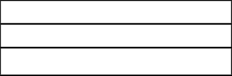
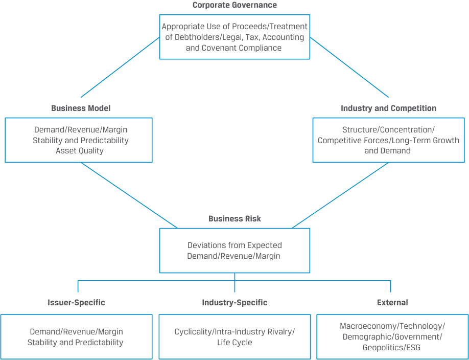
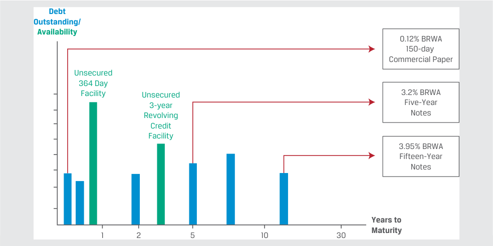
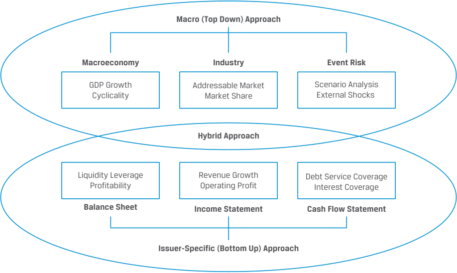
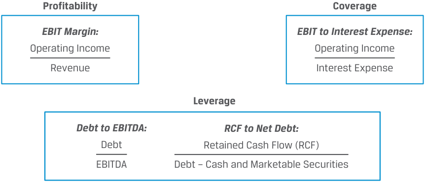
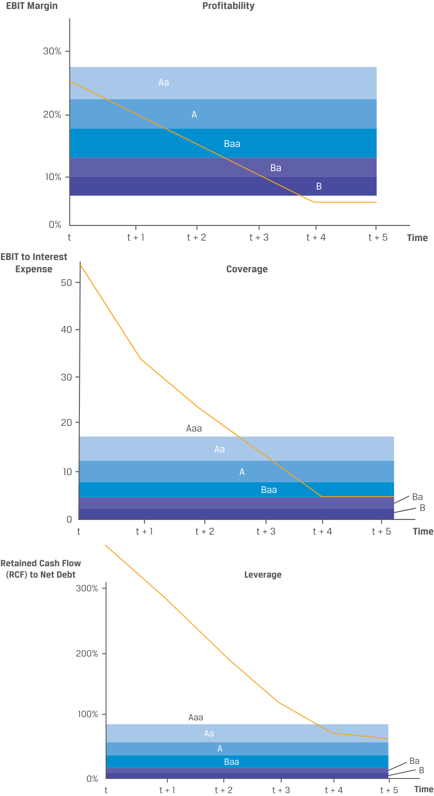
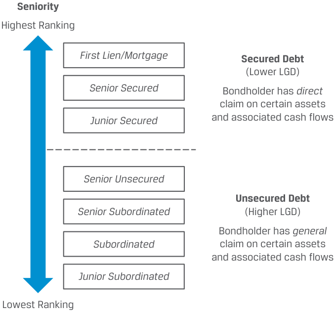

[Toàn Chương] LM16 — Learning Module 16 Credit Analysis for Corporate Issuers
Volume 6: Fixed Income
Learning Module 16 Credit Analysis for Corporate Issuers
Part 1/3: Introduction (PDF Pages 421–430)
Tập 6: Thu nhập Cố định (Fixed Income)
Học phần 16: Phân tích Tín dụng đối với Tổ chức Phát hành Doanh nghiệp (Credit Analysis for Corporate Issuers)
Phần 1/3: Giới thiệu (Trang PDF 421–430)
L E A R N I N G M O D U L E 16
H Ọ C P H Ầ N 16
Credit Analysis for Corporate Issuers
Phân tích Tín dụng đối với Tổ chức Phát hành Doanh nghiệp (Credit Analysis for Corporate Issuers)
LEARNING OUTCOMES
KẾT QUẢ HỌC TẬP (LEARNING OUTCOMES)
- Mastery The candidate should be able to: describe the qualitative and quantitative factors used to evaluate a corporate borrower’s creditworthiness calculate and interpret financial ratios used in credit analysis describe the seniority rankings of debt, secured versus unsecured debt and the priority of claims in bankruptcy, and their impact on credit ratings
- Thành thạo – Ứng viên cần có khả năng:
- mô tả các yếu tố định tính và định lượng được sử dụng để đánh giá mức độ tín nhiệm (creditworthiness) của một bên đi vay là doanh nghiệp
- tính toán và diễn giải các tỷ số tài chính được sử dụng trong phân tích tín dụng (credit analysis)
- mô tả thứ tự ưu tiên thanh toán (seniority rankings) của nợ, nợ có bảo đảm (secured debt) so với nợ không có bảo đảm (unsecured debt) và thứ tự ưu tiên của các quyền đòi nợ khi phá sản (priority of claims in bankruptcy), cùng tác động của chúng lên xếp hạng tín nhiệm (credit ratings)
INTRODUCTION
GIỚI THIỆU (INTRODUCTION)
1
1
In this learning module, we focus on the relative creditworthiness of non-financial corporate borrowers, building on earlier learning modules on corporate issuers as well as the earlier fixed-income module on credit risk and its components.
Trong học phần này, chúng ta tập trung vào mức độ tín nhiệm tương đối của các bên đi vay là doanh nghiệp phi tài chính, dựa trên nền tảng các học phần trước đó về tổ chức phát hành doanh nghiệp cũng như học phần thu nhập cố định trước đó về rủi ro tín dụng và các cấu phần của nó.
In particular, we assess a company’s activities, or its business model, and how this affects the company’s ability to meet its debt obligations. While a company’s probability of default (POD) and loss given default (LGD) are not directly observable, in the first lesson we consider qualitative and quantitative factors that affect these credit risk components. Financial statement analysis and cash flow projections are important tools used to conduct corporate credit analysis. The second lesson applies these tools to calculate and interpret a variety of financial ratios, including profitability, leverage, and coverage metrics, to assess an issuer’s probability of default. The seniority rankings of specific debt issues and use of collateral are of particular importance in determining credit ratings for a corporate issue and assessing the LGD in an event of default, which is addressed in the third and final lesson.
Cụ thể, chúng ta đánh giá các hoạt động của một công ty, hay mô hình kinh doanh (business model) của nó, và cách thức điều này ảnh hưởng đến khả năng đáp ứng các nghĩa vụ nợ của công ty. Mặc dù xác suất vỡ nợ ($\text{POD}$) và mức tổn thất khi vỡ nợ ($\text{LGD}$) của một công ty không thể quan sát trực tiếp, trong bài học đầu tiên chúng ta xem xét các yếu tố định tính và định lượng tác động đến những cấu phần rủi ro tín dụng này. Phân tích báo cáo tài chính và dự phóng dòng tiền là những công cụ quan trọng được sử dụng để thực hiện phân tích tín dụng doanh nghiệp. Bài học thứ hai áp dụng các công cụ này để tính toán và diễn giải nhiều tỷ số tài chính khác nhau, bao gồm các thước đo về khả năng sinh lời (profitability), đòn bẩy tài chính (leverage), và khả năng trang trải nợ (coverage), nhằm đánh giá xác suất vỡ nợ của một tổ chức phát hành. Thứ tự ưu tiên thanh toán của các đợt phát hành nợ cụ thể và việc sử dụng tài sản thế chấp có tầm quan trọng đặc biệt trong việc xác định xếp hạng tín nhiệm cho một đợt phát hành của doanh nghiệp và đánh giá $\text{LGD}$ khi xảy ra sự kiện vỡ nợ, nội dung sẽ được đề cập trong bài học thứ ba và cũng là bài học cuối cùng.
LEARNING MODULE OVERVIEW
TỔNG QUAN HỌC PHẦN (LEARNING MODULE OVERVIEW)
- The credit risk of a borrower can be evaluated using qualitative and quantitative criteria that affect a company’s likelihood of default and the investor’s loss in the event of a default.
- Rủi ro tín dụng của một bên đi vay có thể được đánh giá bằng cách sử dụng các tiêu chí định tính và định lượng có ảnh hưởng đến khả năng xảy ra vỡ nợ của công ty và mức tổn thất của nhà đầu tư trong trường hợp vỡ nợ.
-
Qualitative factors important in gauging creditworthiness include a company’s business model, its industry, and its competitive position and business risks, as well as its corporate governance
-
Quantitative factors in measuring creditworthiness involve financial statement analysis and forecasts, which use profitability, liquidity, leverage, and coverage measures to gauge a company’s ability to meet its fixed debt obligations.
-
Financial ratios are a critical tool used to assess the financial health of a company, identify trends over time, and compare companies within and across industries.
-
Seniority rankings determine the priority of claims on an issuer’s assets and are important determinants of the loss given default for a specific issue. Rating agencies typically provide both issuer and issue ratings for corporate credit.
-
While an issuer credit rating captures the probability of default or expected loss of the issuer’s senior unsecured bonds, an issue rating refers to specific financial obligations of an issuer and takes such factors as seniority into account.
-
Các yếu tố định tính quan trọng trong việc đánh giá mức độ tín nhiệm bao gồm mô hình kinh doanh của công ty, ngành hoạt động, vị thế cạnh tranh và các rủi ro kinh doanh, cũng như quản trị doanh nghiệp (corporate governance).
-
Các yếu tố định lượng trong việc đo lường mức độ tín nhiệm liên quan đến phân tích báo cáo tài chính và các dự báo, sử dụng các thước đo về khả năng sinh lời, thanh khoản, đòn bẩy tài chính và khả năng trang trải nợ để đánh giá năng lực của công ty trong việc đáp ứng các nghĩa vụ nợ cố định.
-
Các tỷ số tài chính là một công cụ thiết yếu được sử dụng để đánh giá sức khỏe tài chính của một công ty, nhận diện các xu hướng theo thời gian, và so sánh các công ty trong cùng một ngành cũng như giữa các ngành với nhau.
-
Thứ tự ưu tiên thanh toán (seniority rankings) xác định mức độ ưu tiên của các quyền đòi nợ đối với tài sản của tổ chức phát hành và là những yếu tố quyết định quan trọng đối với mức tổn thất khi vỡ nợ ($\text{LGD}$) cho một đợt phát hành cụ thể. Các tổ chức xếp hạng tín nhiệm thường cung cấp cả xếp hạng tổ chức phát hành (issuer ratings) và xếp hạng đợt phát hành (issue ratings) đối với tín dụng doanh nghiệp.
-
Trong khi xếp hạng tín nhiệm tổ chức phát hành nắm bắt xác suất vỡ nợ hoặc tổn thất kỳ vọng đối với các trái phiếu cấp cao không có bảo đảm (senior unsecured bonds) của tổ chức phát hành, thì xếp hạng đợt phát hành đề cập đến các nghĩa vụ tài chính cụ thể của một tổ chức phát hành và có tính đến các yếu tố như thứ tự ưu tiên thanh toán.
LEARNING MODULE SELF-ASSESSMENT
TỰ ĐÁNH GIÁ HỌC PHẦN (LEARNING MODULE SELF-ASSESSMENT)
- Which of the following is not a characteristic of higher corporate creditworthiness?
-
A. Lower leverage
-
B. Higher coverage
-
C. Lower liquidity
-
Solution:
- Yếu tố nào sau đây không phải là đặc điểm của mức độ tín nhiệm doanh nghiệp cao hơn?
-
A. Đòn bẩy thấp hơn (Lower leverage)
-
B. Khả năng trang trải nợ cao hơn (Higher coverage)
-
C. Thanh khoản thấp hơn (Lower liquidity)
-
Lời giải:
The correct answer is C. All else held equal, a company with higher liquidity has a greater ability to meet its short-term obligations, including debt interest and principal.
- All else being equal, a borrower will have higher capacity to repay its debt in an industry where the:
-
A. barriers to entry are higher.
-
B. threat of substitutes is higher.
-
C. bargaining power of buyers is higher.
-
Solution:
Đáp án đúng là C. Khi các yếu tố khác không đổi, một công ty có thanh khoản cao hơn sẽ có khả năng lớn hơn trong việc đáp ứng các nghĩa vụ ngắn hạn của mình, bao gồm cả tiền lãi và nợ gốc.
The correct answer is A. An industry with higher barriers to entry tend to have lower threat of new entrants and lower competition. All else being equal, a borrower in such an industry has higher capacity to support its debt.
- Khi các yếu tố khác không đổi, một bên đi vay sẽ có năng lực trả nợ cao hơn trong một ngành mà tại đó:
-
A. rào cản gia nhập ngành cao hơn (barriers to entry are higher).
-
B. mối đe dọa từ sản phẩm thay thế cao hơn (threat of substitutes is higher).
-
C. quyền lực thương lượng của người mua cao hơn (bargaining power of buyers is higher).
-
Lời giải:
- Identify the key credit metrics used in credit analysis:
EBIT margin.
Đáp án đúng là A. Một ngành có rào cản gia nhập cao hơn có xu hướng ít chịu mối đe dọa từ các đối thủ mới gia nhập hơn và có mức độ cạnh tranh thấp hơn. Khi các yếu tố khác không đổi, một bên đi vay trong ngành như vậy có năng lực cao hơn để hỗ trợ cho khoản nợ của mình.
Debt/EBITDA.
- Xác định các thước đo tín dụng chính được sử dụng trong phân tích tín dụng:
- A. Biên EBIT (EBIT margin).
- B. Nợ/EBITDA (Debt/EBITDA).
EBIT/interest expense.
- C. EBIT/chi phí lãi vay (EBIT/interest expense).
| 1. Coverage metric |
|---|
| 2. Leverage metric |
| 3. Profitability metric |
| Loại thước đo |
|---|
| 1. Thước đo khả năng trang trải nợ (Coverage metric) |
| 2. Thước đo đòn bẩy (Leverage metric) |
| 3. Thước đo khả năng sinh lời (Profitability metric) |

Solution:
Lời giải:
| 1. Coverage metric | C. EBIT/interest expense |
|---|---|
| 2. Leverage metric | B. Debt/EBITDA |
| 3. Profitability metric | A. EBIT margin |
| Loại thước đo | Chỉ tiêu tương ứng |
|---|---|
| 1. Thước đo khả năng trang trải nợ (Coverage metric) | C. EBIT/chi phí lãi vay (EBIT/interest expense) |
| 2. Thước đo đòn bẩy (Leverage metric) | B. Nợ/EBITDA (Debt/EBITDA) |
| 3. Thước đo khả năng sinh lời (Profitability metric) | A. Biên EBIT (EBIT margin) |
- Companies X, Y, and Z belong to the same industry with the following financial ratios:
- Các công ty X, Y và Z thuộc cùng một ngành có các tỷ số tài chính như sau:
| Company X | Company Y | Company Z | |
|---|---|---|---|
| EBITDA margin | 15% | 18% | 18% |
| Free cash flow (FCF) after dividends/ | |||
| l debt |
10% | 10% | 8% |
| Debt/EBITDA | 1.5 | 1.5 | 1.8 |
| Debt/capital | 35% | 35% | 38% |
| EBITDA/interest | 5.6 | 6.2 | 6.2 |
| Chỉ tiêu | Công ty X | Công ty Y | Công ty Z |
|---|---|---|---|
| Biên EBITDA (EBITDA margin) | 15% | 18% | 18% |
| Dòng tiền tự do (FCF) sau cổ tức / nợ (FCF after dividends/debt) | 10% | 10% | 8% |
| Nợ/EBITDA (Debt/EBITDA) | 1.5 | 1.5 | 1.8 |
| Nợ/vốn (Debt/capital) | 35% | 35% | 38% |
| EBITDA/chi phí lãi vay (EBITDA/interest) | 5.6 | 6.2 | 6.2 |
Based on the following financial ratios only, which company has the lowest credit risk?
Chỉ dựa vào các tỷ số tài chính trên, công ty nào có rủi ro tín dụng thấp nhất?
-
A. Company X
-
B. Company Y
-
C. Company Z
-
A. Công ty X
-
B. Công ty Y
-
C. Công ty Z
Solution:
Lời giải:
The correct answer is B. Compared to Company X, Company Y has similar leverage metrics but better profitability and coverage. Compared to Company Z, Company Y has similar profitability and coverage but better leverage ratios. Also, when viewing all the metrics, Company Y has either the same value or better than the other two companies. Therefore, Company Y has the lowest credit risk among the three companies.
Đáp án đúng là B. So với Công ty X, Công ty Y có các thước đo đòn bẩy tương tự nhưng khả năng sinh lời và khả năng trang trải nợ tốt hơn. So với Công ty Z, Công ty Y có khả năng sinh lời và khả năng trang trải nợ tương tự nhưng các tỷ số đòn bẩy tốt hơn. Ngoài ra, khi xem xét tất cả các thước đo, Công ty Y đều có giá trị ngang bằng hoặc tốt hơn so với hai công ty còn lại. Do đó, Công ty Y có rủi ro tín dụng thấp nhất trong số ba công ty.
- Rank the recovery rate of the following bonds in the capital structure of a company in bankruptcy from the highest to the lowest:
-
Junior subordinated debt
-
Senior unsecured debt
-
Subordinated debt
-
Second lien debt
-
First lien debt
- Hãy sắp xếp tỷ lệ thu hồi (recovery rate) của các trái phiếu sau đây trong cấu trúc vốn của một công ty đang phá sản theo thứ tự từ cao nhất đến thấp nhất:
-
Nợ thứ cấp cấp dưới (Junior subordinated debt)
-
Nợ cấp cao không có bảo đảm (Senior unsecured debt)
-
Nợ thứ cấp (Subordinated debt)
-
Nợ có quyền nắm giữ tài sản thế chấp ưu tiên thứ hai (Second lien debt)
-
Nợ có quyền nắm giữ tài sản thế chấp ưu tiên thứ nhất (First lien debt)
Solution:
Lời giải:
1. First lien debt
1. Nợ có quyền nắm giữ tài sản thế chấp ưu tiên thứ nhất (First lien debt)
2. Second lien debt
2. Nợ có quyền nắm giữ tài sản thế chấp ưu tiên thứ hai (Second lien debt)
3. Senior unsecured debt
3. Nợ cấp cao không có bảo đảm (Senior unsecured debt)
4. Subordinated debt
4. Nợ thứ cấp (Subordinated debt)
5. Junior subordinated debt
5. Nợ thứ cấp cấp dưới (Junior subordinated debt)
- Two senior unsecured bonds of the same issuer of different maturities have the same:
-
A. issue credit rating only.
-
B. issuer credit rating only.
-
C. issuer and issue credit rating.
-
Solution:
- Hai trái phiếu cấp cao không có bảo đảm của cùng một tổ chức phát hành nhưng có kỳ hạn khác nhau sẽ có cùng:
-
A. xếp hạng tín nhiệm đợt phát hành (issue credit rating) mà thôi.
-
B. xếp hạng tín nhiệm tổ chức phát hành (issuer credit rating) mà thôi.
-
C. cả xếp hạng tín nhiệm tổ chức phát hành và xếp hạng tín nhiệm đợt phát hành.
-
Lời giải:
The correct answer is C. An issuer rating usually applies to its senior unsecured debt and is meant to address an obligor’s overall creditworthiness. All senior unsecured bonds are treated as one class and rank pari passu irrespective of maturity. Therefore, both the issuer and the issue credit ratings are the same.
Đáp án đúng là C. Xếp hạng tổ chức phát hành (issuer rating) thường áp dụng cho nợ cấp cao không có bảo đảm của tổ chức đó và nhằm phản ánh mức độ tín nhiệm tổng thể của bên có nghĩa vụ trả nợ (obligor). Tất cả các trái phiếu cấp cao không có bảo đảm đều được đối xử như cùng một hạng (one class) và xếp ngang hàng (pari passu) bất kể kỳ hạn. Do đó, cả xếp hạng tín nhiệm tổ chức phát hành và xếp hạng tín nhiệm đợt phát hành đều giống nhau.
2
2
ASSESSING CORPORATE CREDITWORTHINESS
ĐÁNH GIÁ MỨC ĐỘ TÍN NHIỆM DOANH NGHIỆP (ASSESSING CORPORATE CREDITWORTHINESS)
describe the qualitative and quantitative factors used to evaluate a corporate borrower’s creditworthiness
mô tả các yếu tố định tính và định lượng được sử dụng để đánh giá mức độ tín nhiệm (creditworthiness) của một bên đi vay là doanh nghiệp
A company’s creditworthiness depends primarily on its ability to generate profits and cash flow sufficient to meet interest and principal payments. Analysts rely on both qualitative and quantitative factors to evaluate both the likelihood of corporate default as well as an investor’s loss in the event of a default. While several different analytical models measure credit risk, here we focus on broad qualitative and quantitative factors.
Mức độ tín nhiệm của một công ty phụ thuộc chủ yếu vào khả năng tạo ra lợi nhuận và dòng tiền đủ để đáp ứng các khoản thanh toán tiền lãi và nợ gốc. Các nhà phân tích dựa vào cả các yếu tố định tính và định lượng để đánh giá cả khả năng xảy ra vỡ nợ của doanh nghiệp cũng như mức tổn thất của nhà đầu tư trong trường hợp vỡ nợ. Mặc dù có một số mô hình phân tích khác nhau đo lường rủi ro tín dụng, tại đây chúng ta tập trung vào các yếu tố định tính và định lượng tổng quát.
Qualitative Factors
Các Yếu tố Định tính (Qualitative Factors)
Earlier Corporate Issuer learning modules covered many of the key qualitative factors used to gauge a company’s ability to satisfy its debt obligations, which include a company’s business model and the industry within which it operates, as well as the competitive forces and business risks it faces. These factors are summarized in Exhibit 1.
Các học phần trước về Tổ chức Phát hành Doanh nghiệp (Corporate Issuers) đã đề cập đến nhiều yếu tố định tính then chốt được sử dụng để đánh giá khả năng thực hiện các nghĩa vụ nợ của một công ty, bao gồm mô hình kinh doanh của công ty và ngành mà công ty hoạt động, cũng như các áp lực cạnh tranh và rủi ro kinh doanh mà công ty phải đối mặt. Những yếu tố này được tóm tắt trong Bảng minh họa 1.
Exhibit 1: Qualitative Factors in Corporate Creditworthiness
Bảng minh họa 1: Các Yếu tố Định tính trong Đánh giá Mức độ Tín nhiệm Doanh nghiệp (Qualitative Factors in Corporate Creditworthiness)

Chú thích hình ảnh: - Quản trị Doanh nghiệp (Corporate Governance): Sử dụng vốn thu được phù hợp / Đối xử với chủ nợ / Tuân thủ pháp luật, thuế, kế toán và các điều khoản ràng buộc. - Mô hình Kinh doanh (Business Model): Tính ổn định và khả năng dự báo của Nhu cầu/Doanh thu/Biên lợi nhuận; Chất lượng tài sản (Asset Quality). - Ngành và Cạnh tranh (Industry and Competition): Cấu trúc/Mức độ tập trung / Các áp lực cạnh tranh / Tăng trưởng và nhu cầu dài hạn. - Rủi ro Kinh doanh (Business Risk) – Độ lệch so với Nhu cầu/Doanh thu/Biên lợi nhuận kỳ vọng, bao gồm: - Đặc thù của tổ chức phát hành (Issuer-Specific): Tính ổn định và khả năng dự báo của Nhu cầu/Doanh thu/Biên lợi nhuận. - Đặc thù ngành (Industry-Specific): Tính chu kỳ / Cạnh tranh nội ngành / Vòng đời ngành. - Bên ngoài (External): Kinh tế vĩ mô / Công nghệ / Nhân khẩu học / Chính phủ / Địa chính trị / ESG.
Financial analysts evaluating a company’s business model, its industry, and its competitive position and business risks from a debtholder’s perspective must not only consider whether a firm generates an acceptable return over its cost of capital, but also whether the timing and size of cash flows are sufficient to adequately cover debt obligations.
Các nhà phân tích tài chính đánh giá mô hình kinh doanh, ngành hoạt động, vị thế cạnh tranh và rủi ro kinh doanh của một công ty dưới góc nhìn của chủ nợ không chỉ phải xem xét liệu doanh nghiệp có tạo ra mức tỷ suất sinh lợi chấp nhận được cao hơn chi phí vốn hay không, mà còn phải xem xét liệu thời điểm và quy mô của các dòng tiền có đủ để trang trải thỏa đáng các nghĩa vụ nợ hay không.
Established firms with a business model characterized by stable and predictable cash flows, low business risk, and less-competitive pressures have a higher capacity to use debt in their capital structure and a lower likelihood of default than those firms with lower and less stable cash flows, higher business risk, and/or greater competition. In contrast to an equity analyst’s valuation of all future cash flows, fixed-income analysts often focus on how a company’s creditworthiness may change over time given the finite nature of short- and long-term debt claims, as shown in the following example.
Các doanh nghiệp có vị thế vững chắc với mô hình kinh doanh được đặc trưng bởi dòng tiền ổn định và có thể dự báo được, rủi ro kinh doanh thấp, và ít áp lực cạnh tranh sẽ có năng lực cao hơn trong việc sử dụng nợ vay trong cấu trúc vốn của mình và có khả năng xảy ra vỡ nợ thấp hơn so với những doanh nghiệp có dòng tiền thấp hơn và kém ổn định hơn, rủi ro kinh doanh cao hơn, và/hoặc mức độ cạnh tranh gay gắt hơn. Ngược lại với việc định giá tất cả các dòng tiền tương lai của nhà phân tích cổ phiếu, các nhà phân tích thu nhập cố định thường tập trung vào việc mức độ tín nhiệm của một công ty có thể thay đổi như thế nào theo thời gian do bản chất hữu hạn của các quyền đòi nợ ngắn hạn và dài hạn, như được thể hiện trong ví dụ sau đây.
EXAMPLE 1
VÍ DỤ 1
Qualitative Factors Affecting BRWA Creditworthiness
Các Yếu tố Định tính Ảnh hưởng đến Mức độ Tín nhiệm của BRWA
Bright Wheel Automotive (BRWA), a hypothetical auto manufacturing firm mentioned in an earlier lesson, has a product line based on traditional internal combustion engine (“ICE”) technology. Having introduced its first electric vehicle (EV) two years ago, which comprises 5% of current revenue, BRWA’s management has ambitious plans to convert over half of its models to all-electric over the coming decade, while adopting hybrid (ICE and electric) technology for its remaining fleet over the same period. BRWA’s debt profile as an investment-grade corporate issuer is as follows:
Bright Wheel Automotive (BRWA), một công ty sản xuất ô tô giả định đã được đề cập trong bài học trước, có dòng sản phẩm dựa trên công nghệ động cơ đốt trong truyền thống (“ICE”). Sau khi giới thiệu mẫu xe điện (EV) đầu tiên của mình cách đây hai năm, hiện chiếm 5% doanh thu hiện tại, ban lãnh đạo của BRWA có kế hoạch đầy tham vọng nhằm chuyển đổi hơn một nửa số mẫu xe của mình sang thuần điện trong thập kỷ tới, đồng thời áp dụng công nghệ lai (hybrid – kết hợp ICE và điện) cho đội xe còn lại trong cùng giai đoạn đó. Hồ sơ nợ của BRWA với tư cách là một tổ chức phát hành doanh nghiệp hạng đầu tư như sau:

Chú thích hình ảnh: Hồ sơ nợ của BRWA theo Số năm đến khi đáo hạn (Years to Maturity): Thương phiếu 150 ngày lãi suất 0.12%, Hạn mức 364 ngày không bảo đảm, Hạn mức tín dụng tuần hoàn 3 năm không bảo đảm, Trái phiếu 5 năm lãi suất 3.2%, và Trái phiếu 15 năm lãi suất 3.95%.
Qualitative factors, including BRWA’s business model, industry, and competition and business risk, affect the creditworthiness of its outstanding 150-day commercial paper, five-year notes and fifteen-year notes.
Các yếu tố định tính, bao gồm mô hình kinh doanh, ngành, sự cạnh tranh và rủi ro kinh doanh của BRWA, ảnh hưởng đến mức độ tín nhiệm của thương phiếu 150 ngày, trái phiếu 5 năm và trái phiếu 15 năm đang lưu hành của công ty.
BRWA’s planned shift to a mostly EV-based product line over the next decade mirrors changes announced by other global automobile producers as policymakers seek to reduce vehicle emissions in the wake of climate change. The impact of BRWA’s business model, industry, and competitive forces and business risk on its outstanding debt may be described as follows:
Sự dịch chuyển theo kế hoạch của BRWA sang dòng sản phẩm chủ yếu dựa trên xe điện (EV) trong thập kỷ tới phản ánh những thay đổi đã được công bố bởi các nhà sản xuất ô tô toàn cầu khác khi các nhà hoạch định chính sách tìm cách giảm khí thải phương tiện trước tình trạng biến đổi khí hậu. Tác động của mô hình kinh doanh, ngành, các áp lực cạnh tranh và rủi ro kinh doanh của BRWA lên các khoản nợ đang lưu hành có thể được mô tả như sau:
Business Model: BRWA’s established customer base and acclaimed ICE vehicle lineup have enabled it to maintain stable revenue growth and profitability to date, but the company’s technology and products must evolve over time to meet EV market demand. This business model change results in higher business risk.
Mô hình Kinh doanh (Business Model): Tệp khách hàng vững chắc và dòng xe ICE được đánh giá cao của BRWA đã giúp công ty duy trì mức tăng trưởng doanh thu và khả năng sinh lời ổn định cho đến nay, nhưng công nghệ và sản phẩm của công ty phải phát triển theo thời gian để đáp ứng nhu cầu thị trường xe điện. Sự thay đổi mô hình kinh doanh này dẫn đến rủi ro kinh doanh cao hơn.
Industry and Competitive Environment: BRWA faces growing competition within a fragmented global auto industry, with some competitors moving faster in establishing EV market share. Competition will intensify as other traditional ICE producers pursue a similar EV strategy amid potentially lower barriers to entry for pure EV companies, such as Tesla and software technology companies.
Ngành và Môi trường Cạnh tranh (Industry and Competitive Environment): BRWA phải đối mặt với sự cạnh tranh ngày càng tăng trong ngành công nghiệp ô tô toàn cầu vốn bị phân mảnh, với việc một số đối thủ cạnh tranh đang hành động nhanh hơn trong việc xác lập thị phần EV. Cạnh tranh sẽ ngày càng gay gắt khi các nhà sản xuất ICE truyền thống khác theo đuổi chiến lược EV tương tự trong bối cảnh rào cản gia nhập ngành có khả năng thấp hơn đối với các công ty thuần xe điện, chẳng hạn như Tesla và các công ty công nghệ phần mềm.
Business Risk: The execution risk of the EV strategy significantly increases BRWA’s business risk. This is because the EV technology platform is not based on ICE technology, but rather on the integration of batteries, hardware, and software, increasing the bargaining power of BRWA’s supplier base.
Rủi ro Kinh doanh (Business Risk): Rủi ro thực thi (execution risk) của chiến lược EV làm tăng đáng kể rủi ro kinh doanh của BRWA. Điều này là do nền tảng công nghệ EV không dựa trên công nghệ ICE, mà dựa trên sự tích hợp giữa pin, phần cứng và phần mềm, làm tăng quyền lực thương lượng của nhóm nhà cung cấp cho BRWA.
Consider BRWA’s debt outstanding as follows:
Hãy xem xét các khoản nợ đang lưu hành của BRWA như sau:
Commercial Paper: Commercial paper investors face little to no exposure to BRWA’s long-term business strategy given the very short tenor of this debt. Investors will primarily focus on the company’s liquidity position based upon its existing ICE revenue base when assessing credit risk.
Thương phiếu (Commercial Paper): Các nhà đầu tư thương phiếu hầu như không phải chịu mức độ phơi nhiễm nào trước chiến lược kinh doanh dài hạn của BRWA do kỳ hạn rất ngắn của khoản nợ này. Các nhà đầu tư sẽ chủ yếu tập trung vào vị thế thanh khoản của công ty dựa trên cơ sở doanh thu ICE hiện hữu khi đánh giá rủi ro tín dụng.
Five-Year Notes: Investors in BRWA’s medium-term bonds face growing exposure to the greater competitive pressures and business risk associated with BRWA’s EV strategy, but the company expects to generate most of its revenue from its traditional ICE customer base when the bond matures.
Trái phiếu Kỳ hạn 5 Năm (Five-Year Notes): Các nhà đầu tư vào trái phiếu trung hạn của BRWA phải đối mặt với mức độ phơi nhiễm ngày càng tăng trước các áp lực cạnh tranh lớn hơn và rủi ro kinh doanh gắn liền với chiến lược EV của BRWA, nhưng công ty vẫn kỳ vọng tạo ra phần lớn doanh thu từ tệp khách hàng ICE truyền thống khi trái phiếu này đáo hạn.
Fifteen-Year Notes: Investors in BRWA’s long-term bonds face the greatest risk to the company’s EV strategy and the associated competitive pressures and elevated business risk, as the company will make later interest and principal payments from cash flows that depend upon a successful EV transition.
Trái phiếu Kỳ hạn 15 Năm (Fifteen-Year Notes): Các nhà đầu tư vào trái phiếu dài hạn của BRWA phải đối mặt với rủi ro lớn nhất đối với chiến lược EV của công ty cùng các áp lực cạnh tranh đi kèm và rủi ro kinh doanh gia tăng, vì công ty sẽ thực hiện các khoản thanh toán tiền lãi và nợ gốc về sau từ các dòng tiền phụ thuộc vào quá trình chuyển đổi sang EV thành công.
The BRWA debt issues highlighted in Example 1 are for general, unsecured claims where company cash flows are the primary source of repayment. Secured debt, on the other hand, designates specific company assets as collateral as a secondary source of interest and principal payments. While the quality of a company’s assets is an important factor for both unsecured and secured debt, secured lenders prefer to have tangible (or hard collateral) rather than intangible (or soft collateral) assets promised or pledged to secure debt. The value of collateral is most relevant for companies with lower credit quality and of greatest importance to creditworthiness when a borrower’s POD rises to a level where the collateral is necessary to protect the exposure. Tangible assets are identifiable physical assets like property, plant and equipment, inventory, cash, and marketable securities, whereas intangible assets include patents, intellectual property rights, and goodwill. The use of collateral and secured debt can either reduce the cost of borrowing versus unsecured alternatives or offer corporate issuers access to debt markets that may otherwise not be available at all, as in the case of the following example.
Các đợt phát hành nợ của BRWA được nêu bật trong Ví dụ 1 là các quyền đòi nợ chung, không có bảo đảm, trong đó dòng tiền của công ty là nguồn trả nợ chính. Mặt khác, nợ có bảo đảm chỉ định các tài sản cụ thể của công ty làm tài sản thế chấp đóng vai trò là nguồn thanh toán tiền lãi và nợ gốc thứ cấp. Mặc dù chất lượng tài sản của một công ty là yếu tố quan trọng đối với cả nợ không có bảo đảm và nợ có bảo đảm, những bên cho vay có bảo đảm ưa thích việc được cam kết hoặc cầm cố bằng các tài sản hữu hình (hay tài sản thế chấp cứng – hard collateral) hơn là các tài sản vô hình (hay tài sản thế chấp mềm – soft collateral) để bảo đảm cho khoản nợ. Giá trị của tài sản thế chấp có ý nghĩa liên quan nhất đối với các công ty có chất lượng tín dụng thấp hơn và có tầm quan trọng lớn nhất đối với mức độ tín nhiệm khi $\text{POD}$ của bên đi vay tăng đến mức cần phải có tài sản thế chấp để bảo vệ dư nợ rủi ro. Tài sản hữu hình (tangible assets) là các tài sản vật chất có thể xác định được như bất động sản, nhà xưởng và thiết bị (PP&E), hàng tồn kho, tiền mặt và chứng khoán khả mại (marketable securities), trong khi tài sản vô hình (intangible assets) bao gồm bằng sáng chế, quyền sở hữu trí tuệ và lợi thế thương mại (goodwill). Việc sử dụng tài sản thế chấp và nợ có bảo đảm có thể làm giảm chi phí đi vay so với các phương án không có bảo đảm hoặc mang lại cho các tổ chức phát hành doanh nghiệp quyền tiếp cận các thị trường nợ mà nếu không có tài sản thế chấp thì họ hoàn toàn không thể tiếp cận được, như trong trường hợp của ví dụ sau đây.
EXAMPLE 2
VÍ DỤ 2
Royal Caribbean Cruise Lines Secured Debt
Khoản Nợ Có Bảo đảm của Royal Caribbean Cruise Lines
In the wake of the COVID-19 pandemic, Royal Caribbean Cruises Ltd. (RCL) suspended its cruise operations in March 2020. Given the uncertainty surrounding the length and severity of the health crisis, RCL took immediate steps to enhance liquidity, preserve cash, and obtain additional financing.
Sau khi đại dịch COVID-19 bùng phát, Royal Caribbean Cruises Ltd. (RCL) đã đình chỉ hoạt động du thuyền của mình vào tháng 3 năm 2020. Trước sự không chắc chắn xoay quanh thời gian kéo dài và mức độ nghiêm trọng của cuộc khủng hoảng y tế, RCL đã thực hiện các bước đi tức thời nhằm tăng cường thanh khoản, bảo toàn tiền mặt và huy động thêm nguồn tài trợ.
The first of several RCL financings in that year took place in May 2020, when the company initiated a private offering of $3.3 billion in senior secured notes due in 2023 and 2025. The notes were secured by 28 of Royal Caribbean’s fleet of over 60 vessels and also included material intellectual property of the company. RCL used the proceeds of the bond to repay a $2.35 billion 364-day senior secured term loan agreement, with the remainder of the bond proceeds available for general corporate purposes. While the continued suspension of cruises due to the ongoing pandemic led to subsequent RCL convertible bond and equity issuances later in the year, the initial issuance of secured debt at the outset of the COVID-19 crisis represented a cost-effective alternative for the company to preserve liquidity and financial flexibility in the near term by pledging its tangible assets as collateral. Despite the increase in RCL’s POD due to the pandemic, investors were willing to provide debt financing in part due to the reduced LGD of the secured notes.
Đợt tài trợ đầu tiên trong số nhiều đợt tài trợ của RCL trong năm đó đã diễn ra vào tháng 5 năm 2020, khi công ty khởi xướng đợt chào bán riêng lẻ (private offering) trị giá 3.3 tỷ USD trái phiếu trung hạn cấp cao có bảo đảm đáo hạn vào năm 2023 và 2025. Các trái phiếu này được bảo đảm bằng 28 tàu trong đội tàu hơn 60 chiếc của Royal Caribbean và cũng bao gồm cả tài sản sở hữu trí tuệ trọng yếu của công ty. RCL đã sử dụng số tiền thu được từ trái phiếu để hoàn trả thỏa thuận khoản vay có kỳ hạn 364 ngày cấp cao có bảo đảm trị giá 2.35 tỷ USD, với phần tiền thu được còn lại từ trái phiếu sẵn sàng cho các mục đích chung của doanh nghiệp. Mặc dù việc tiếp tục đình chỉ các chuyến du thuyền do đại dịch kéo dài đã dẫn đến các đợt phát hành trái phiếu chuyển đổi và cổ phần tiếp theo của RCL vào cuối năm đó, nhưng đợt phát hành nợ có bảo đảm ban đầu ngay khi bắt đầu cuộc khủng hoảng COVID-19 đã thể hiện một giải pháp thay thế hiệu quả về chi phí để công ty bảo toàn thanh khoản và sự linh hoạt tài chính trong ngắn hạn bằng cách cầm cố các tài sản hữu hình của mình làm tài sản thế chấp. Bất chấp sự gia tăng trong $\text{POD}$ của RCL do đại dịch, các nhà đầu tư vẫn sẵn lòng cung cấp tài trợ nợ một phần là nhờ $\text{LGD}$ đã được giảm thiểu của các trái phiếu có bảo đảm này.
Corporate governance is an important qualitative factor to consider when evaluating corporate creditworthiness. While the assessment of an individual borrower’s character is a common element of consumer credit analysis, it is more difficult in practice to evaluate management’s character and the expected treatment of debtholders for a publicly owned corporation or one that is privately held by investors and private equity firms. Unlike equity investors with voting rights on important company matters, debtholders seek to specify the use of debt proceeds as well as any borrower restrictions at the time of issuance.
Quản trị doanh nghiệp (corporate governance) là một yếu tố định tính quan trọng cần xem xét khi đánh giá mức độ tín nhiệm của doanh nghiệp. Mặc dù việc đánh giá tư cách/uy tín (character) của một bên đi vay cá nhân là yếu tố phổ biến của phân tích tín dụng tiêu dùng, nhưng trên thực tế lại khó khăn hơn trong việc đánh giá tư cách của ban lãnh đạo và cách đối xử kỳ vọng đối với các chủ nợ của một công ty đại chúng hoặc một công ty tư nhân thuộc sở hữu của các nhà đầu tư và các quỹ vốn cổ phần tư nhân (private equity firms). Không giống như các nhà đầu tư cổ phần có quyền biểu quyết đối với các vấn đề quan trọng của công ty, các chủ nợ tìm cách quy định cụ thể mục đích sử dụng số tiền thu được từ phát hành nợ cũng như bất kỳ hạn chế nào đối với bên đi vay ngay tại thời điểm phát hành.
Highly rated issuers of unsecured debt are usually able to raise debt proceeds for general corporate purposes with few restrictions that usually include affirmative covenants only, such as compliance with applicable laws and regulations, maintaining current lines of business, insuring and maintaining company assets, and paying taxes. Credit analysts must evaluate management signals to make appropriate judgments about the treatment of debtholders versus shareholders and the potential for dilution.
Các tổ chức phát hành nợ không có bảo đảm được xếp hạng cao thường có khả năng huy động tiền từ phát hành nợ cho các mục đích chung của doanh nghiệp với rất ít hạn chế, vốn thường chỉ bao gồm các điều khoản ràng buộc khẳng định (affirmative covenants), chẳng hạn như tuân thủ luật pháp và các quy định hiện hành, duy trì các lĩnh vực kinh doanh hiện tại, mua bảo hiểm và bảo dưỡng tài sản công ty, và nộp thuế. Các nhà phân tích tín dụng phải đánh giá các tín hiệu từ ban lãnh đạo để đưa ra những phán đoán phù hợp về cách đối xử đối với chủ nợ so với cổ đông và nguy cơ pha loãng.
For high-yield issuers of secured debt, investors usually impose additional restrictions to protect bondholders if an issuer’s financial condition deteriorates, including covenants restricting dividends or additional debt as well as financial covenants. Management’s past track record in the treatment of bondholders is an important consideration. For example, if management pursued business or financial strategies that resulted in major credit rating downgrades—such as an overleveraged debt-financed acquisition, a large debt-financed special dividend to shareholders, or a major debt-financed stock buyback program—credit analysts should look closely at the borrower’s character.
Đối với các tổ chức phát hành nợ có bảo đảm thuộc nhóm lợi suất cao (HY), các nhà đầu tư thường áp đặt các hạn chế bổ sung nhằm bảo vệ trái chủ nếu tình hình tài chính của tổ chức phát hành bị suy giảm, bao gồm các điều khoản ràng buộc hạn chế chi trả cổ tức hoặc vay thêm nợ cũng như các điều khoản ràng buộc tài chính (financial covenants). Hồ sơ quá khứ của ban lãnh đạo trong cách đối xử với các trái chủ là một lưu ý quan trọng. Ví dụ, nếu ban lãnh đạo từng theo đuổi các chiến lược kinh doanh hoặc tài chính dẫn đến việc bị hạ bậc xếp hạng tín nhiệm nghiêm trọng — chẳng hạn như một thương vụ mua lại tài trợ bằng nợ với đòn bẩy quá mức, một khoản cổ tức đặc biệt quy mô lớn trả cho cổ đông được tài trợ bằng nợ, hoặc một chương trình mua lại cổ phiếu quỹ quy mô lớn được tài trợ bằng nợ — các nhà phân tích tín dụng nên xem xét kỹ lưỡng tư cách của bên đi vay.
As in the case of equity analysts, credit analysts should also evaluate accounting policies. Aggressive accounting policies mask the performance and the risk of the underlying business and are potential warning flags to the true character of the business and its leaders. Examples may include the use of significant off-balance-sheet financing, the preference for capitalizing versus immediately expensing items, and early and premature revenue recognition. Perhaps the most important red flag is changing auditors or CFOs frequently. These potential warning flags, as well as any evidence of fraud or malfeasance, may signal other behaviors or actions that may adversely impact an issuer’s creditworthiness. A well-known example of accounting fraud is provided below in Example 3.
Giống như trường hợp của các nhà phân tích cổ phiếu, các nhà phân tích tín dụng cũng nên đánh giá các chính sách kế toán. Các chính sách kế toán thiếu thận trọng/hiếu chiến (aggressive accounting policies) che giấu kết quả hoạt động và rủi ro của hoạt động kinh doanh cơ sở, đồng thời là những cờ cảnh báo (warning flags) tiềm tàng về bản chất thực sự của doanh nghiệp và những người lãnh đạo doanh nghiệp đó. Các ví dụ có thể bao gồm việc sử dụng đáng kể tài trợ ngoài bảng cân đối kế toán (off-balance-sheet financing), sự ưu tiên vốn hóa (capitalizing) thay vì hạch toán ngay vào chi phí trong kỳ (immediately expensing) đối với các khoản mục, và việc ghi nhận doanh thu sớm hoặc khi chưa đủ điều kiện (premature revenue recognition). Có lẽ dấu hiệu cảnh báo đỏ (red flag) quan trọng nhất là việc thay đổi công ty kiểm toán hoặc Giám đốc Tài chính (CFO) thường xuyên. Những cờ cảnh báo tiềm tàng này, cũng như bất kỳ bằng chứng nào về gian lận hoặc hành vi sai trái, có thể báo hiệu những hành vi hoặc hành động khác có nguy cơ tác động bất lợi đến mức độ tín nhiệm của tổ chức phát hành. Một ví dụ nổi tiếng về gian lận kế toán được trình bày dưới đây trong Ví dụ 3.
EXAMPLE 3
VÍ DỤ 3
Wirecard AG’s Accounting Fraud
Gian lận Kế toán của Wirecard AG (Wirecard AG’s Accounting Fraud)
Wirecard AG, a German payments firm that processed credit card and online payments, enjoyed a meteoric rise following its 2005 listing on the Frankfurt Stock Exchange. It joined the DAX index of the 30 most valuable companies in Germany and reached a peak market capitalization of over EUR27 billion in 2018 before filing for insolvency in June 2020.
Wirecard AG, một công ty thanh toán của Đức chuyên xử lý thẻ tín dụng và thanh toán trực tuyến, đã có sự trỗi dậy thần tốc sau khi niêm yết vào năm 2005 trên Sở Giao dịch Chứng khoán Frankfurt. Công ty đã gia nhập chỉ số DAX gồm 30 công ty giá trị nhất nước Đức và đạt mức vốn hóa thị trường đỉnh điểm hơn 27 tỷ EUR vào năm 2018 trước khi nộp đơn xin phá sản do mất khả năng thanh toán vào tháng 6 năm 2020.
A qualitative analysis of its management strategy and accounting policy in the years prior to insolvency raises the following red flags about the company’s character:
Một phân tích định tính về chiến lược quản lý và chính sách kế toán của công ty trong những năm trước khi mất khả năng thanh toán làm dấy lên các dấu hiệu cảnh báo đỏ (red flags) sau đây về tư cách của công ty:
After Wirecard received a banking license in 2006, it showed a significant revenue growth and a rapid international expansion through acquiring legitimate existing businesses, such as Citibank’s Asia-Pacific credit card processing arm.
Sau khi Wirecard nhận được giấy phép ngân hàng vào năm 2006, công ty đã cho thấy mức tăng trưởng doanh thu đáng kể và sự mở rộng quốc tế nhanh chóng thông qua việc mua lại các doanh nghiệp hợp pháp đang hoạt động, chẳng hạn như mảng xử lý thẻ tín dụng khu vực Châu Á – Thái Bình Dương của Citibank.
Wirecard’s opaque and overly complex business model masked rapidly rising revenue and profit figures, giving rise to market rumors of suspicious transactions and money laundering.
Mô hình kinh doanh thiếu minh bạch và phức tạp thái quá của Wirecard đã che đậy các con số doanh thu và lợi nhuận tăng nhanh, làm dấy lên những tin đồn trên thị trường về các giao dịch đáng ngờ và hoạt động rửa tiền.
While the company claimed thousands of small and medium-sized business customers and dozens of partners globally as sources of revenue growth, just three third-party partner companies provided a large share of Wirecard’s reported revenue and most of its profits. Additionally, many of the firm’s assets were held through external offshore trust accounts.
Mặc dù công ty tuyên bố có hàng ngàn khách hàng doanh nghiệp vừa và nhỏ cùng hàng chục đối tác trên toàn cầu là nguồn tăng trưởng doanh thu, nhưng chỉ riêng ba công ty đối tác bên thứ ba đã mang lại một tỷ trọng lớn trong doanh thu báo cáo và phần lớn lợi nhuận của Wirecard. Ngoài ra, nhiều tài sản của công ty được nắm giữ thông qua các tài khoản tín thác ở nước ngoài (external offshore trust accounts).
Wirecard used its bank subsidiary as a lender to fintech partner companies, as evidenced by the following excerpt from its half-year financial report dated 30 June 2019:
Wirecard đã sử dụng công ty con là ngân hàng của mình làm bên cho vay đối với các công ty đối tác công nghệ tài chính (fintech), như được minh chứng qua đoạn trích sau đây từ báo cáo tài chính bán niên đề ngày 30 tháng 6 năm 2019 của công ty:
“Wirecard does not only provide risk management, technology, and banking services (to its fintech partner companies) but also sometimes provides the financing based on detailed individual assessments and suitable security measures – often in the form of cash securities. This enables the Group, on the one hand, to increase the added value from its cooperation with FinTech companies and, on the other, to also significantly increase interest income.”
“Wirecard không chỉ cung cấp các dịch vụ quản lý rủi ro, công nghệ và ngân hàng (cho các công ty đối tác fintech của mình) mà đôi khi còn cung cấp nguồn tài trợ dựa trên các đánh giá chi tiết từng trường hợp và các biện pháp bảo đảm phù hợp – thường dưới hình thức chứng khoán tiền mặt (cash securities). Điều này cho phép Tập đoàn, một mặt, gia tăng giá trị cộng thêm từ sự hợp tác với các công ty FinTech và, mặt khác, cũng làm tăng đáng kể thu nhập lãi.”
The company filed for insolvency in June 2020 when auditors could not confirm the existence of EUR1.9 billion in cash, which comprised the bulk of Wirecard’s profits. It was later discovered that Wirecard’s revenue was deposited in escrow accounts held by third-party trustees, rather than paid to the company itself.
Công ty đã nộp đơn xin phá sản vào tháng 6 năm 2020 khi các kiểm toán viên không thể xác nhận sự tồn tại của khoản tiền mặt trị giá 1.9 tỷ EUR, vốn chiếm phần lớn lợi nhuận của Wirecard. Sau đó, người ta phát hiện ra rằng doanh thu của Wirecard được gửi vào các tài khoản ký quỹ (escrow accounts) do các bên nhận tín thác thứ ba nắm giữ, thay vì được thanh toán cho chính công ty.
After Wirecard was declared insolvent with debts of EUR3.2 billion, its share price immediately fell by over 70% and the price of its unsecured bonds fell to 20 cents per EUR. CEO Markus Braun was arrested and later charged with fraud, breach of trust, and accounting manipulation following a criminal investigation. It was the biggest accounting fraud and bankruptcy in Germany’s post-World War II corporate history.
Sau khi Wirecard bị tuyên bố mất khả năng thanh toán với các khoản nợ lên tới 3.2 tỷ EUR, giá cổ phiếu của công ty lập tức sụt giảm hơn 70% và giá trái phiếu không có bảo đảm của công ty rơi xuống mức 20 xu trên mỗi EUR mệnh giá. Tổng giám đốc điều hành (CEO) Markus Braun đã bị bắt giữ và sau đó bị buộc tội gian lận, lạm dụng tín nhiệm và thao túng kế toán sau một cuộc điều tra hình sự. Đây là vụ gian lận kế toán và phá sản lớn nhất trong lịch sử doanh nghiệp của nước Đức kể từ sau Thế chiến thứ hai.
Quantitative Factors
Các Yếu tố Định lượng (Quantitative Factors)
Financial statement modeling and forecasting are a quantitative expression of analyst expectations for a company’s future performance. Model inputs are based on an understanding of a company’s fundamental business drivers and an assessment of future risks and opportunities. These inputs are derived using a top-down, macroeconomic or a bottom-up, issuer-specific approach at the company level. In contrast to equity models, which seek to value a firm’s stock based upon all cash flows available to shareholders, quantitative credit analysis aims to estimate the likelihood that a company can meet its debt obligations in the future. Exhibit 2 summarizes key quantitative factors used to measure a corporate issuer’s credit risk.
Việc lập mô hình và dự báo báo cáo tài chính là sự biểu đạt định lượng cho những kỳ vọng của nhà phân tích về kết quả hoạt động tương lai của một công ty. Các đầu vào của mô hình dựa trên sự hiểu biết về các động lực kinh doanh cơ bản của công ty và đánh giá về các rủi ro cũng như cơ hội trong tương lai. Những đầu vào này được xây dựng bằng cách sử dụng phương pháp tiếp cận kinh tế vĩ mô từ trên xuống (top-down, macroeconomic) hoặc phương pháp tiếp cận đặc thù của tổ chức phát hành từ dưới lên (bottom-up, issuer-specific) ở cấp độ công ty. Ngược lại với các mô hình cổ phiếu vốn tìm cách định giá cổ phiếu của doanh nghiệp dựa trên tất cả các dòng tiền thuộc về cổ đông, phân tích tín dụng định lượng nhằm mục đích ước tính khả năng một công ty có thể đáp ứng các nghĩa vụ nợ của mình trong tương lai. Bảng minh họa 2 tóm tắt các yếu tố định lượng then chốt được sử dụng để đo lường rủi ro tín dụng của một tổ chức phát hành doanh nghiệp.
Exhibit 2: Quantitative Approaches in Corporate Credit Risk Assessment
Bảng minh họa 2: Các Phương pháp Tiếp cận Định lượng trong Đánh giá Rủi ro Tín dụng Doanh nghiệp (Quantitative Approaches in Corporate Credit Risk Assessment)

Chú thích hình ảnh: - Phương pháp Tiếp cận Vĩ mô (Từ trên xuống – Macro / Top Down Approach): - Kinh tế vĩ mô (Macroeconomy): Tăng trưởng GDP, Tính chu kỳ. - Ngành (Industry): Quy mô thị trường tiềm năng (Addressable Market), Thị phần (Market Share). - Rủi ro sự kiện (Event Risk): Phân tích kịch bản (Scenario Analysis), Các cú sốc bên ngoài (External Shocks). - Phương pháp Tiếp cận Kết hợp (Hybrid Approach) $\updownarrow$ - Phương pháp Tiếp cận Đặc thù của Tổ chức Phát hành (Từ dưới lên – Issuer-Specific / Bottom Up Approach): - Bảng cân đối kế toán (Balance Sheet): Thanh khoản (Liquidity), Đòn bẩy (Leverage). - Báo cáo kết quả hoạt động kinh doanh (Income Statement): Tăng trưởng doanh thu (Revenue Growth), Lợi nhuận hoạt động (Operating Profit), Khả năng sinh lời (Profitability). - Báo cáo lưu chuyển tiền tệ (Cash Flow Statement): Khả năng trả nợ (Debt Service Coverage), Khả năng thanh toán lãi vay (Interest Coverage).
Top-down analysis typically begins with a macroeconomic forecast, gauging a company’s growth relative to GDP, addressing a firm’s addressable market and market share, and assessing the likelihood and impact of possible adverse events that may be incorporated in a scenario analysis. For example, the economic cycle has a relationship with the timing and severity of the credit cycle; thus, the credit cycle’s expected impact on a specific company or industry is commonly used to gauge credit risk on a macro level. Bottom-up analysis involves forecasting key revenue drivers and balance sheet positions, while a hybrid approach might combine expected cyclicality with changing bottom-up features to forecast a company’s cash flows. The goal of quantitative analysis is to identify key factors that drive a corporate issuer’s POD and how they change over the credit cycle. These include the following factors:
Phân tích từ trên xuống (top-down analysis) thường bắt đầu bằng một dự báo kinh tế vĩ mô, đánh giá mức tăng trưởng của công ty so với GDP, xem xét quy mô thị trường tiềm năng và thị phần của doanh nghiệp, đồng thời đánh giá khả năng xảy ra và tác động của các sự kiện bất lợi có thể được đưa vào phân tích kịch bản. Ví dụ, chu kỳ kinh tế có mối quan hệ với thời điểm và mức độ nghiêm trọng của chu kỳ tín dụng; do đó, tác động kỳ vọng của chu kỳ tín dụng lên một công ty hoặc một ngành cụ thể thường được sử dụng để đánh giá rủi ro tín dụng ở cấp độ vĩ mô. Phân tích từ dưới lên (bottom-up analysis) bao gồm việc dự báo các động lực doanh thu chính và các khoản mục trên bảng cân đối kế toán, trong khi phương pháp tiếp cận kết hợp (hybrid approach) có thể kết hợp tính chu kỳ kỳ vọng với các đặc điểm thay đổi từ dưới lên để dự báo dòng tiền của công ty. Mục tiêu của phân tích định lượng là xác định các yếu tố chính thúc đẩy $\text{POD}$ của một tổ chức phát hành doanh nghiệp và cách chúng thay đổi qua chu kỳ tín dụng. Chúng bao gồm các yếu tố sau:
Profitability: Strong and stable earnings are important in generating the cash flows that are a primary source of debt repayment. Analysts gauging a company’s ability to make periodic fixed debt payments typically focus on operating profits and recurring revenues as opposed to non-recurring or one-time gains. Macro factors, such as an expected economic downturn for cyclical companies or a declining market share, can adversely impact future profitability.
Khả năng sinh lời (Profitability): Thu nhập mạnh mẽ và ổn định có vai trò quan trọng trong việc tạo ra các dòng tiền vốn là nguồn trả nợ chính. Các nhà phân tích đánh giá khả năng thực hiện các khoản thanh toán nợ cố định định kỳ của một công ty thường tập trung vào lợi nhuận hoạt động (operating profits) và doanh thu định kỳ (recurring revenues) thay vì các khoản lãi không thường xuyên hoặc phát sinh một lần (non-recurring or one-time gains). Các yếu tố vĩ mô, chẳng hạn như suy thoái kinh tế dự kiến đối với các công ty mang tính chu kỳ hoặc thị phần sụt giảm, có thể tác động bất lợi đến khả năng sinh lời trong tương lai.
Leverage: Financial leverage measures a company’s relative reliance on debt financing in its operations. Measures of leverage typically compare the total level of debt to a firm’s resources as gauged by assets, capital, or a measure of profitability or cash flow. Given the fixed nature of debt claims, debt investors prefer lower leverage—that is, more resources per unit of debt— while equity investors usually benefit from more debt and higher financial leverage.
Đòn bẩy tài chính (Leverage): Đòn bẩy tài chính đo lường mức độ phụ thuộc tương đối của một công ty vào việc tài trợ bằng nợ vay trong hoạt động của mình. Các thước đo đòn bẩy thường so sánh tổng mức nợ với các nguồn lực của doanh nghiệp được đo bằng tài sản, nguồn vốn, hoặc một thước đo về khả năng sinh lời hay dòng tiền. Do bản chất cố định của các quyền đòi nợ, các nhà đầu tư nợ ưa thích đòn bẩy thấp hơn — tức là có nhiều nguồn lực hơn trên mỗi đơn vị nợ — trong khi các nhà đầu tư cổ phần thường hưởng lợi từ việc vay nợ nhiều hơn và đòn bẩy tài chính cao hơn.
Coverage: Lenders gauge creditworthiness by comparing periodic income measures or cash flows to debt service (interest and principal), interest, or debt-like payments, which include leases. Greater coverage means that debt investors benefit from higher income or cash flows from which fixed debt obligations can be paid.
Khả năng trang trải nợ (Coverage): Bên cho vay đánh giá mức độ tín nhiệm bằng cách so sánh các thước đo thu nhập hoặc dòng tiền định kỳ với nghĩa vụ trả nợ (debt service – gồm cả lãi và gốc), chi phí lãi vay, hoặc các khoản thanh toán tương tự nợ bao gồm cả tiền thuê tài sản (leases). Khả năng trang trải nợ lớn hơn có nghĩa là các nhà đầu tư nợ được hưởng lợi từ thu nhập hoặc dòng tiền cao hơn để từ đó thanh toán các nghĩa vụ nợ cố định.
Liquidity: Debtholders evaluating near-term debt obligations for issuers with less stable cash flows often consider the availability of short-term resources to pay interest or principal. While a firm may be solvent (i.e., have assets in excess of liabilities and equity), it may nevertheless fail to meet its fixed obligations if it lacks cash or assets that can be readily converted into cash, such as marketable securities. Measures of liquidity also include committed bank facilities if a corporate borrower has the contractual right to draw down cash for the period in question.
Thanh khoản (Liquidity): Các chủ nợ khi đánh giá các nghĩa vụ nợ ngắn hạn đối với những tổ chức phát hành có dòng tiền kém ổn định hơn thường xem xét sự sẵn có của các nguồn lực ngắn hạn để thanh toán tiền lãi hoặc nợ gốc. Mặc dù một doanh nghiệp có thể có khả năng thanh toán dài hạn (solvent – tức là có tài sản vượt quá nợ phải trả và vốn chủ sở hữu), nhưng doanh nghiệp đó vẫn có thể không đáp ứng được các nghĩa vụ cố định của mình nếu thiếu tiền mặt hoặc các tài sản có thể dễ dàng chuyển đổi thành tiền mặt, chẳng hạn như chứng khoán khả mại. Các thước đo thanh khoản cũng bao gồm các hạn mức tín dụng ngân hàng đã cam kết (committed bank facilities) nếu bên đi vay là doanh nghiệp có quyền theo hợp đồng để rút tiền mặt trong giai đoạn đang xét.
The calculation and interpretation of these quantitative factors using financial ratios is addressed in the next lesson. While investors in senior unsecured investment-grade debt are almost solely focused on POD, high-yield investors in companies that use subordination in their debt structure and/or collateral as a secondary source of repayment also consider historical LGD rates and other factors in assessing credit risk, which is the subject of the third lesson.
Việc tính toán và diễn giải các yếu tố định lượng này bằng cách sử dụng các tỷ số tài chính sẽ được đề cập trong bài học tiếp theo. Trong khi các nhà đầu tư vào nợ cấp cao không có bảo đảm thuộc hạng đầu tư (IG) gần như chỉ tập trung duy nhất vào $\text{POD}$, thì các nhà đầu tư lợi suất cao (HY) vào những công ty có sử dụng sự phân tầng thứ cấp (subordination) trong cấu trúc nợ và/hoặc tài sản thế chấp làm nguồn trả nợ thứ cấp còn xem xét thêm tỷ lệ $\text{LGD}$ lịch sử và các yếu tố khác khi đánh giá rủi ro tín dụng, vốn là chủ đề của bài học thứ ba.
QUESTION SET
BỘ CÂU HỎI (QUESTION SET)
- Match the key quantitative factors:
-
Coverage
-
Leverage
-
■ Liquidity
- Hãy ghép nối các yếu tố định lượng chính:
-
Khả năng trang trải nợ (Coverage)
-
Đòn bẩy tài chính (Leverage)
-
■ Thanh khoản (Liquidity)
Volume 6: Fixed Income
Learning Module 16 Credit Analysis for Corporate Issuers
Part 2/3: Financial Ratios in Corporate Credit Analysis (PDF Pages 431–446)
Tập 6: Thu nhập Cố định (Fixed Income)
Học phần 16: Phân tích Tín dụng đối với Tổ chức Phát hành Doanh nghiệp (Credit Analysis for Corporate Issuers)
Phần 2/3: Các Tỷ số Tài chính trong Phân tích Tín dụng Doanh nghiệp (Trang PDF 431–446)
-
Relative reliance on debt to finance operations Borrower ability to meet short-term obligations Comparison of periodic earnings or cash flow to debt service Solution:
-
Relative reliance on debt to finance operations Leverage Borrower ability to meet short-term obligations Liquidity Comparison of periodic earnings or cash flow to debt service Coverage
-
- Determine the correct answers to fill in the blanks: Secured lenders prefer to have _ assets (or _ collateral) rather than _ assets (or ___ collateral) promised or pledged to secure debt. Solution: Secured lenders prefer to have tangible assets (or hard collateral) rather than intangible assets (or soft collateral) promised or pledged to secure debt.
-
- Which of the following statements about shareholders and debtholders is not true? A. Both shareholders and debtholders benefit from higher profitability. B. Shareholders generally benefit from higher leverage, while debtholders prefer lower leverage.
-
C. Both shareholders and debtholders benefit from lower coverage.
-
Solution: The correct answer is C. Both shareholders and debtholders benefit from higher coverage, which is the income or cash flow available to pay debt service.
-
- Determine the correct answers to fill in the blanks: Firms with a business model characterized by stable and predictable cash flows, _ business risk, and ___ competitive pressures have a higher capacity to use debt in their capital structure and a lower likelihood of default. Solution: Firms with a business model characterized by stable and predictable cash flows, low business risk, and less competitive pressures have a higher capacity to use debt in their capital structure and a lower likelihood of default.
- Mức độ phụ thuộc tương đối vào nợ vay để tài trợ cho hoạt động (Relative reliance on debt to finance operations)
- Khả năng của bên đi vay trong việc đáp ứng các nghĩa vụ ngắn hạn (Borrower ability to meet short-term obligations)
- So sánh thu nhập hoặc dòng tiền định kỳ với nghĩa vụ trả nợ (Comparison of periodic earnings or cash flow to debt service)
Lời giải:
- Mức độ phụ thuộc tương đối vào nợ vay để tài trợ cho hoạt động $\rightarrow$ Đòn bẩy tài chính (Leverage)
- Khả năng của bên đi vay trong việc đáp ứng các nghĩa vụ ngắn hạn $\rightarrow$ Thanh khoản (Liquidity)
-
So sánh thu nhập hoặc dòng tiền định kỳ với nghĩa vụ trả nợ $\rightarrow$ Khả năng trang trải nợ (Coverage)
-
- Xác định các câu trả lời đúng để điền vào chỗ trống: Những bên cho vay có bảo đảm ưa thích việc được cam kết hoặc cầm cố bằng các tài sản _ (hay tài sản thế chấp _) hơn là các tài sản _ (hay tài sản thế chấp ___) để bảo đảm cho khoản nợ.
Lời giải: Những bên cho vay có bảo đảm ưa thích việc được cam kết hoặc cầm cố bằng các tài sản hữu hình (tangible) (hay tài sản thế chấp cứng – hard) hơn là các tài sản vô hình (intangible) (hay tài sản thế chấp mềm – soft) để bảo đảm cho khoản nợ.
-
- Phát biểu nào sau đây về cổ đông và chủ nợ là không đúng?
- A. Cả cổ đông và chủ nợ đều hưởng lợi từ khả năng sinh lời cao hơn.
- B. Cổ đông nhìn chung hưởng lợi từ đòn bẩy cao hơn, trong khi chủ nợ ưa thích đòn bẩy thấp hơn.
-
C. Cả cổ đông và chủ nợ đều hưởng lợi từ khả năng trang trải nợ (coverage) thấp hơn.
-
Lời giải: Đáp án đúng là C. Cả cổ đông và chủ nợ đều hưởng lợi từ khả năng trang trải nợ cao hơn, vốn là thu nhập hoặc dòng tiền sẵn có để thanh toán nghĩa vụ trả nợ.
-
- Xác định các câu trả lời đúng để điền vào chỗ trống: Các doanh nghiệp có mô hình kinh doanh được đặc trưng bởi dòng tiền ổn định và có thể dự báo được, rủi ro kinh doanh _, và áp lực cạnh tranh ___ sẽ có năng lực cao hơn trong việc sử dụng nợ vay trong cấu trúc vốn của mình và có khả năng xảy ra vỡ nợ thấp hơn.
calculate and interpret financial ratios used in credit analysis
Lời giải: Các doanh nghiệp có mô hình kinh doanh được đặc trưng bởi dòng tiền ổn định và có thể dự báo được, rủi ro kinh doanh thấp (low), và áp lực cạnh tranh ít hơn (less) sẽ có năng lực cao hơn trong việc sử dụng nợ vay trong cấu trúc vốn của mình và có khả năng xảy ra vỡ nợ thấp hơn.
3
CÁC TỶ SỐ TÀI CHÍNH TRONG PHÂN TÍCH TÍN DỤNG DOANH NGHIỆP (FINANCIAL RATIOS IN CORPORATE CREDIT ANALYSIS)
tính toán và diễn giải các tỷ số tài chính được sử dụng trong phân tích tín dụng (credit analysis)
The use of financial ratios based upon the quantitative factors outlined in the prior lesson allows credit analysts to assess the relative financial health of a company, identify trends over time, and compare companies within and across industries with a focus on profitability, coverage, and leverage. Common financial ratios used to evaluate a corporate issuer’s credit risk are outlined in Exhibit 3.
Việc sử dụng các tỷ số tài chính dựa trên những yếu tố định lượng đã phác thảo trong bài học trước cho phép các nhà phân tích tín dụng đánh giá sức khỏe tài chính tương đối của một công ty, nhận diện các xu hướng theo thời gian, và so sánh các công ty trong cùng một ngành cũng như giữa các ngành với nhau với trọng tâm là khả năng sinh lời (profitability), khả năng trang trải nợ (coverage), và đòn bẩy tài chính (leverage). Các tỷ số tài chính phổ biến được sử dụng để đánh giá rủi ro tín dụng của một tổ chức phát hành doanh nghiệp được trình bày trong Bảng minh họa 3.
Exhibit 3: Key Financial Ratios for Corporate Creditworthiness
Bảng minh họa 3: Các Tỷ số Tài chính Chính đối với Mức độ Tín nhiệm Doanh nghiệp (Key Financial Ratios for Corporate Creditworthiness)

In general, credit risk analysis using profitability, coverage, and leverage ratios seeks to establish a firm’s ability to service cash flows from operating activities, as opposed to asset disposals or financing activities. Cash flow measures used in credit analysis, such as free cash flow (FCF, or net income less working capital increases, investment in fixed assets, and net interest paid), funds from operations (FFO, or net income from continuing operations, depreciation and amortization, deferred income tax, and other non-cash items), or retained cash flow (RCF, or net cash flow from operating activities less dividends paid) are more conservative than others because they make certain adjustments for cash used in managing and maintaining the business or distributed to shareholders. Debt and interest expense measures used in credit analysis also may be adjusted for operating leases, debt-like fixed lease payments, and/or other fixed off-balance-sheet obligations that impact a company’s ability to service its debt.
Nhìn chung, phân tích rủi ro tín dụng sử dụng các tỷ số về khả năng sinh lời, khả năng trang trải nợ và đòn bẩy tìm cách xác lập khả năng trả nợ của doanh nghiệp bằng các dòng tiền từ hoạt động kinh doanh, thay vì từ việc thanh lý tài sản hay hoạt động tài chính. Các thước đo dòng tiền được sử dụng trong phân tích tín dụng, chẳng hạn như dòng tiền tự do ($\text{FCF}$, hay lợi nhuận ròng trừ đi mức tăng vốn lưu động, đầu tư vào tài sản cố định, và chi phí lãi vay ròng đã trả), dòng tiền từ hoạt động kinh doanh ($\text{FFO}$ – funds from operations, hay lợi nhuận ròng từ hoạt động kinh doanh liên tục cộng khấu hao tài sản cố định và hao mòn tài sản vô hình, thuế thu nhập hoãn lại, và các khoản mục phi tiền mặt khác), hoặc dòng tiền giữ lại ($\text{RCF}$ – retained cash flow, hay dòng tiền ròng từ hoạt động kinh doanh trừ đi cổ tức đã trả) mang tính thận trọng hơn so với các thước đo khác bởi vì chúng thực hiện một số điều chỉnh nhất định đối với lượng tiền mặt được sử dụng trong việc quản lý và duy trì doanh nghiệp hoặc được phân phối cho các cổ đông. Các thước đo nợ và chi phí lãi vay được sử dụng trong phân tích tín dụng cũng có thể được điều chỉnh cho các khoản thuê hoạt động (operating leases), các khoản thanh toán tiền thuê cố định tương tự nợ, và/hoặc các nghĩa vụ cố định khác ngoài bảng cân đối kế toán có ảnh hưởng đến khả năng trả nợ của công ty.
These measures and the ratios developed based upon these measures are non-IFRS in the sense that they do not have official IFRS definitions; the concepts, names, and definitions given should be viewed as one usage among several possible, in most cases.
Những thước đo này và các tỷ số được xây dựng dựa trên chúng là các chỉ tiêu phi chuẩn mực IFRS (non-IFRS) theo nghĩa là chúng không có định nghĩa chính thức theo IFRS; các khái niệm, tên gọi và định nghĩa được đưa ra nên được xem là một cách sử dụng phổ biến trong số nhiều cách có thể có trong hầu hết các trường hợp.
EBIT Margin: Credit analysts focus on EBIT (earnings before interest and taxes) to determine a company’s operating performance prior to capital costs and taxes, since interest expense is paid before income taxes are calculated. In some cases, EBITDA (or earnings before interest, taxes, depreciation, and amortization expense) is used as a broader measure, which adds back (non-cash) depreciation and amortization expense. Higher EBIT margins increase profits available to service debt.
Biên EBIT (EBIT Margin): Các nhà phân tích tín dụng tập trung vào EBIT (thu nhập trước lãi vay và thuế) để xác định kết quả hoạt động kinh doanh của công ty trước chi phí vốn và thuế, bởi vì chi phí lãi vay được thanh toán trước khi tính thuế thu nhập. Trong một số trường hợp, EBITDA (hay thu nhập trước lãi vay, thuế, khấu hao tài sản cố định và hao mòn tài sản vô hình) được sử dụng như một thước đo rộng hơn bằng cách cộng ngược trở lại chi phí khấu hao và hao mòn (phi tiền mặt). Biên EBIT cao hơn làm tăng lợi nhuận sẵn có để trả nợ.
EBIT to Interest Expense: This measures the degree to which operating profit covers periodic interest payments, with a higher coverage ratio representing less credit risk. In some cases, the numerator is changed to include depreciation and amortization (EBITDA) as well as rental expense (EBITDAR), while the denominator may be increased to include lease payments or reduced by interest earned on marketable securities and cash.
EBIT trên Chi phí lãi vay (EBIT to Interest Expense): Chỉ số này đo lường mức độ mà lợi nhuận hoạt động trang trải cho các khoản thanh toán lãi vay định kỳ, với tỷ số trang trải cao hơn thể hiện rủi ro tín dụng thấp hơn. Trong một số trường hợp, tử số được thay đổi để bao gồm cả chi phí khấu hao và hao mòn (EBITDA) cũng như chi phí thuê tài sản (EBITDAR), trong khi mẫu số có thể được tăng lên để bao gồm các khoản thanh toán tiền thuê hoặc được giảm bớt đi phần tiền lãi thu được từ chứng khoán khả mại và tiền mặt.
Debt to EBITDA: Leverage ratios are often expressed with debt either in the numerator or denominator, so care must be taken to reflect whether a greater or lesser number reflects increased leverage. For example, a higher debt-to-EBITDA ratio represents higher leverage, and debt may be adjusted to reflect operating leases or off-balance-sheet commitments. Rating agencies often use it as a trigger for rating
Nợ trên EBITDA (Debt to EBITDA): Các tỷ số đòn bẩy thường được biểu thị với khoản mục nợ nằm ở tử số hoặc mẫu số, do đó cần cẩn trọng để phản ánh chính xác việc con số lớn hơn hay nhỏ hơn biểu thị đòn bẩy gia tăng. Ví dụ, tỷ số nợ trên EBITDA cao hơn thể hiện đòn bẩy cao hơn, và khoản mục nợ có thể được điều chỉnh để phản ánh các hợp đồng thuê hoạt động hoặc các cam kết ngoài bảng cân đối kế toán. Các tổ chức xếp hạng tín nhiệm thường sử dụng tỷ số này làm ngưỡng kích hoạt (trigger) cho các hành động xếp hạng
actions, and banks reference it in loan covenants. A higher ratio indicates more leverage and thus higher credit risk. Note that this ratio can be very volatile for companies with high cash flow variability, such as those in cyclical industries and with high operating leverage (fixed costs).
và các ngân hàng viện dẫn nó trong các điều khoản ràng buộc của khoản vay (loan covenants). Tỷ số cao hơn cho thấy đòn bẩy nhiều hơn và do đó rủi ro tín dụng cao hơn. Lưu ý rằng tỷ số này có thể biến động rất mạnh đối với các công ty có mức độ biến thiên dòng tiền cao, chẳng hạn như các công ty trong những ngành mang tính chu kỳ và có đòn bẩy hoạt động (operating leverage – chi phí cố định) cao.
Retained Cash Flow (RCF) to Net Debt: Use of cash flow rather than earnings measures is also common in measuring leverage, while here the debt measure is reduced by available cash. A higher RCF to net debt measure implies lower leverage.
Dòng tiền Giữ lại (RCF) trên Nợ ròng (Retained Cash Flow to Net Debt): Việc sử dụng các thước đo dòng tiền thay vì thu nhập cũng rất phổ biến trong việc đo lường đòn bẩy, đồng thời tại đây thước đo nợ được giảm trừ đi lượng tiền mặt sẵn có. Thước đo RCF trên nợ ròng cao hơn hàm ý đòn bẩy thấp hơn.
While financial ratios used in credit analysis vary across industries, the values of financial ratios themselves for a given rating or level of credit quality may also range widely across industries due to different business models, competitive pressures, and other factors.
Mặc dù các tỷ số tài chính được sử dụng trong phân tích tín dụng khác nhau giữa các ngành, bản thân giá trị của các tỷ số tài chính đối với một mức xếp hạng hoặc mức chất lượng tín dụng nhất định cũng có thể dao động rất rộng giữa các ngành do sự khác biệt về mô hình kinh doanh, áp lực cạnh tranh và các yếu tố khác.
Credit analysts use financial modeling to evaluate how these ratios might change over time as revenue drivers change, as in the following example:
Các nhà phân tích tín dụng sử dụng mô hình tài chính để đánh giá xem các tỷ số này có thể thay đổi như thế nào theo thời gian khi các động lực doanh thu thay đổi, như trong ví dụ sau đây:
EXAMPLE 4
VÍ DỤ 4
Bowstream Corporation Credit Risk Assessment
Đánh giá Rủi ro Tín dụng của Tập đoàn Bowstream (Bowstream Corporation Credit Risk Assessment)
A credit analyst has created a financial statement model to evaluate the credit risk of Bowstream Corporation, a mid-sized, investment-grade consumer durables company. While Bowstream’s most recent financial results show a solid 10% sales growth and a robust 35% operating profit margin, the analyst would like to assess Bowstream’s performance under a downside scenario where the company’s production and interest costs rise due to inflation amid slower sales growth. Model assumptions used for Bowstream’s sales growth, cost of goods sold as a percentage of sales, interest rates, and debt growth over the next five years are as follows:
Một nhà phân tích tín dụng đã xây dựng mô hình báo cáo tài chính để đánh giá rủi ro tín dụng của Tập đoàn Bowstream, một công ty hàng tiêu dùng lâu bền (consumer durables) quy mô vừa thuộc hạng đầu tư. Mặc dù kết quả tài chính gần đây nhất của Bowstream cho thấy mức tăng trưởng doanh thu vững chắc 10% và biên lợi nhuận hoạt động mạnh mẽ ở mức 35%, nhà phân tích muốn đánh giá kết quả hoạt động của Bowstream theo một kịch bản bất lợi (downside scenario) trong đó chi phí sản xuất và chi phí lãi vay của công ty tăng lên do lạm phát giữa bối cảnh tăng trưởng doanh thu chậm lại. Các giả định của mô hình được sử dụng cho tốc độ tăng trưởng doanh thu, giá vốn hàng bán tính theo tỷ lệ phần trăm doanh thu, lãi suất và tốc độ tăng trưởng nợ của Bowstream trong 5 năm tới như sau:
| Reported Year 0 |
Projected Year 1 |
Year 2 | Year 3 | Year 4 | Year 5 | |
|---|---|---|---|---|---|---|
| Sales growth | 10% | 5% | 5% | 5% | 5% | 5% |
| Cost of goods sold/Sales |
65% | 70% | 75% | 80% | 85% | 85% |
| Interest rate on | ||||||
| debt | 6% | 7% | 7% | 7% | 8% | 8% |
| Debtgrowth rate | 10% | 10% | 10% | 10% | 10% | 10% |
| Các Giả định | Năm 0 (Báo cáo) | Năm 1 (Dự phóng) | Năm 2 | Năm 3 | Năm 4 | Năm 5 |
|---|---|---|---|---|---|---|
| Tăng trưởng doanh thu (Sales growth) | 10% | 5% | 5% | 5% | 5% | 5% |
| Giá vốn hàng bán/Doanh thu (Cost of goods sold/Sales) | 65% | 70% | 75% | 80% | 85% | 85% |
| Lãi suất nợ vay (Interest rate on debt) | 6% | 7% | 7% | 7% | 8% | 8% |
| Tốc độ tăng trưởng nợ (Debt growth rate) | 10% | 10% | 10% | 10% | 10% | 10% |
Selected financial data and projections from these three-statement model results based on these assumptions and stable ratios of balance sheet and other positions to sales are as follows:
Dữ liệu tài chính chọn lọc và các dự phóng từ kết quả mô hình ba báo cáo tài chính (three-statement model) dựa trên các giả định này cùng tỷ lệ ổn định của các khoản mục trên bảng cân đối kế toán và các khoản mục khác so với doanh thu như sau:
| Income Statement | Year 0 | Year 1 | Year 2 | Year 3 | Year 4 | Year 5 |
|---|---|---|---|---|---|---|
| Sales | 5,225 | 5,486 | 5,761 | 6,049 | 6,351 | 6,669 |
| Cost of goods sold i |
(3,396) | (3,840) | (4,320) | (4,839) | (5,398) | (5,668) |
| Gross profit | 1,829 | 1,646 | 1,440 | 1,210 | 953 | 1,000 |
| Gross profit (%) | 35% | 30% | 25% | 20% | 15% | 15% |
| Selling, general, and administrative |
(499) | (524) | (550) | (577) | (606) | (637) |
| Interest payments on debt | (38) | (46) | (51) | (56) | (72) | (83) |
| Interest earned on cash and mktable sec |
12 | 12 | 12 | 12 | 12 | 12 |
| Depreciation | (400) | (467) | (517) | (547) | (559) | (552) |
| Báo cáo Kết quả Hoạt động Kinh doanh (Income Statement) | Năm 0 | Năm 1 | Năm 2 | Năm 3 | Năm 4 | Năm 5 |
|---|---|---|---|---|---|---|
| Doanh thu (Sales) | 5,225 | 5,486 | 5,761 | 6,049 | 6,351 | 6,669 |
| Giá vốn hàng bán (Cost of goods sold) | (3,396) | (3,840) | (4,320) | (4,839) | (5,398) | (5,668) |
| Lợi nhuận gộp (Gross profit) | 1,829 | 1,646 | 1,440 | 1,210 | 953 | 1,000 |
| Biên lợi nhuận gộp – Gross profit (%) | 35% | 30% | 25% | 20% | 15% | 15% |
| Chi phí bán hàng, chung và quản lý (SG&A) | (499) | (524) | (550) | (577) | (606) | (637) |
| Chi trả lãi vay (Interest payments on debt) | (38) | (46) | (51) | (56) | (72) | (83) |
| Lãi thu được từ tiền mặt và chứng khoán khả mại (Interest earned on cash and mktable sec) | 12 | 12 | 12 | 12 | 12 | 12 |
| Khấu hao (Depreciation) | (400) | (467) | (517) | (547) | (559) | (552) |
| Income Statement |
Year 0 | Year 1 | Year 2 | Year 3 | Year 4 | Year 5 |
|---|---|---|---|---|---|---|
| Profit before tax | 905 | 621 | 335 | 41 | (273) | (259) |
| i Taxes |
(317) | (217) | (117) | (14) | 95 | 90 |
| Net income | 588 | 404 | 218 | 27 | (177) | (168) |
| Net income (% of sales) | 11% | 7% | 4% | 0% | −3% | −3% |
| Dividends | (118) | (81) | (44) | (5) | — | — |
| Retained earnings | 470 | 323 | 174 | 21 | (177) | (168) |
| Balance Sheet | Year 0 | Year 1 | Year 2 | Year 3 | Year 4 | Year 5 |
| Cash and marketable | ||||||
| securities | 400 | 400 | 400 | 400 | 400 | 400 |
| Current assets | 627 | 658 | 691 | 726 | 762 | 800 |
| Fixed assets | ||||||
| Cost basis | 5,993 | 6,840 | 7,594 | 8,233 | 8,735 | 9,256 |
| Accumulated depreciation i |
(2,400) | (2,867) | (3,383) | (3,931) | (4,490) | (5,042) |
| Net fixed assets | 3,593 | 3,973 | 4,211 | 4,303 | 4,244 | 4,214 |
| Total assets: | 4,620 | 5,032 | 5,302 | 5,428 | 5,407 | 5,414 |
| Current liabilities | 523 | 549 | 576 | 605 | 635 | 667 |
| Debt | 627 | 690 | 759 | 835 | 960 | 1,104 |
| Stock (225 shares issued @ 10) |
2,250 | 2,250 | 2,250 | 2,250 | 2,250 | 2,250 |
| Accumulated retained earnings |
1,220 | 1,543 | 1,718 | 1,739 | 1,562 | 1,394 |
| Total liabilities and equity |
4,620 | 5,032 | 5,302 | 5,428 | 5,407 | 5,414 |
| Consolidated Statement of | ||||||
| Cash Flows | Year 0 | Year 1 | Year 2 | Year 3 | Year 4 | Year 5 |
| Net cash from operating activities |
978 | 866 | 729 | 568 | 376 | 377 |
| Net cash used in investing activities |
(918) | (847) | (754) | (639) | (501) | (521) |
| Net cash from financing | ||||||
| i activities |
(61) | (18) | 25 | 71 | 125 | 144 |
| Báo cáo Kết quả Hoạt động Kinh doanh (Income Statement) | Năm 0 | Năm 1 | Năm 2 | Năm 3 | Năm 4 | Năm 5 |
|---|---|---|---|---|---|---|
| Lợi nhuận trước thuế (Profit before tax) | 905 | 621 | 335 | 41 | (273) | (259) |
| Thuế (Taxes) | (317) | (217) | (117) | (14) | 95 | 90 |
| Lợi nhuận ròng (Net income) | 588 | 404 | 218 | 27 | (177) | (168) |
| Lợi nhuận ròng (% doanh thu) | 11% | 7% | 4% | 0% | −3% | −3% |
| Cổ tức (Dividends) | (118) | (81) | (44) | (5) | — | — |
| Lợi nhuận giữ lại (Retained earnings) | 470 | 323 | 174 | 21 | (177) | (168) |
| Bảng Cân đối Kế toán (Balance Sheet) | Năm 0 | Năm 1 | Năm 2 | Năm 3 | Năm 4 | Năm 5 |
| Tiền mặt và chứng khoán khả mại (Cash and marketable securities) | 400 | 400 | 400 | 400 | 400 | 400 |
| Tài sản ngắn hạn (Current assets) | 627 | 658 | 691 | 726 | 762 | 800 |
| Tài sản cố định (Fixed assets) | ||||||
| Nguyên giá (Cost basis) | 5,993 | 6,840 | 7,594 | 8,233 | 8,735 | 9,256 |
| Khấu hao lũy kế (Accumulated depreciation) | (2,400) | (2,867) | (3,383) | (3,931) | (4,490) | (5,042) |
| Tài sản cố định ròng (Net fixed assets) | 3,593 | 3,973 | 4,211 | 4,303 | 4,244 | 4,214 |
| Tổng tài sản (Total assets): | 4,620 | 5,032 | 5,302 | 5,428 | 5,407 | 5,414 |
| Nợ ngắn hạn (Current liabilities) | 523 | 549 | 576 | 605 | 635 | 667 |
| Nợ vay (Debt) | 627 | 690 | 759 | 835 | 960 | 1,104 |
| Vốn cổ phần (225 cổ phiếu phát hành @ 10) (Stock) | 2,250 | 2,250 | 2,250 | 2,250 | 2,250 | 2,250 |
| Lợi nhuận giữ lại lũy kế (Accumulated retained earnings) | 1,220 | 1,543 | 1,718 | 1,739 | 1,562 | 1,394 |
| Tổng nợ phải trả và vốn chủ sở hữu (Total liabilities and equity) | 4,620 | 5,032 | 5,302 | 5,428 | 5,407 | 5,414 |
| Báo cáo Lưu chuyển Tiền tệ Hợp nhất (Consolidated Statement of Cash Flows) | Năm 0 | Năm 1 | Năm 2 | Năm 3 | Năm 4 | Năm 5 |
| Lưu chuyển tiền thuần từ hoạt động kinh doanh (Net cash from operating activities) | 978 | 866 | 729 | 568 | 376 | 377 |
| Lưu chuyển tiền thuần sử dụng trong hoạt động đầu tư (Net cash used in investing activities) | (918) | (847) | (754) | (639) | (501) | (521) |
| Lưu chuyển tiền thuần từ hoạt động tài chính (Net cash from financing activities) | (61) | (18) | 25 | 71 | 125 | 144 |
The analyst uses data from these three-statement model results to solve for recent and projected profitability, coverage, and leverage ratios in Exhibit 3:
Nhà phân tích sử dụng dữ liệu từ kết quả mô hình ba báo cáo tài chính này để giải tìm các tỷ số về khả năng sinh lời, khả năng trang trải nợ và đòn bẩy gần đây cũng như dự phóng theo Bảng minh họa 3:
| Year 0 | Year 1 | Year 2 | Year 3 | Year 4 | Year 5 | |
|---|---|---|---|---|---|---|
| EBIT | 1,330 | 1,122 | 890 | 632 | 346 | 364 |
| EBITDA | 1,730 | 1,589 | 1,407 | 1,180 | 906 | 916 |
| FFO (Net cash from operating activities) |
978 | 866 | 729 | 568 | 376 | 377 |
| RCF (FFO − Dividends) | 861 | 785 | 685 | 563 | 376 | 377 |
| EBIT margin | 25% | 20% | 15% | 10% | 5% | 5% |
| EBIT to Interest expense | 51.9 | 32.9 | 23.0 | 14.4 | 5.8 | 5.2 |
| Chỉ tiêu | Năm 0 | Năm 1 | Năm 2 | Năm 3 | Năm 4 | Năm 5 |
|---|---|---|---|---|---|---|
| EBIT | 1,330 | 1,122 | 890 | 632 | 346 | 364 |
| EBITDA | 1,730 | 1,589 | 1,407 | 1,180 | 906 | 916 |
| FFO (Tiền thuần từ hoạt động kinh doanh) | 978 | 866 | 729 | 568 | 376 | 377 |
| RCF ($\text{FFO} - \text{Cổ tức}$) | 861 | 785 | 685 | 563 | 376 | 377 |
| Biên EBIT (EBIT margin) | 25% | 20% | 15% | 10% | 5% | 5% |
| EBIT trên Chi phí lãi vay ròng (EBIT to Interest expense) | 51.9 | 32.9 | 23.0 | 14.4 | 5.8 | 5.2 |
| Year 0 | Year 1 | Year 2 | Year 3 | Year 4 | Year 5 | |
|---|---|---|---|---|---|---|
| Debt to EBITDA | 0.36 | 0.43 | 0.54 | 0.71 | 1.06 | 1.21 |
| RCF to Net debt | 379% | 271% | 191% | 130% | 67% | 54% |
| Chỉ tiêu | Năm 0 | Năm 1 | Năm 2 | Năm 3 | Năm 4 | Năm 5 |
|---|---|---|---|---|---|---|
| Nợ trên EBITDA (Debt to EBITDA) | 0.36 | 0.43 | 0.54 | 0.71 | 1.06 | 1.21 |
| RCF trên Nợ ròng (RCF to Net debt) | 379% | 271% | 191% | 130% | 67% | 54% |
Under this scenario, Bowstream faces declining profitability (as EBIT margin falls), weaker debt coverage (lower EBIT-to-interest expense), and increased leverage (a higher debt to EBITDA and lower RCF to net debt), which is likely to lead to wider credit spreads and a potential ratings downgrade.
Theo kịch bản này, Bowstream phải đối mặt với khả năng sinh lời sụt giảm (khi biên EBIT giảm xuống), khả năng trang trải nợ suy yếu (tỷ số EBIT trên chi phí lãi vay thấp hơn), và đòn bẩy gia tăng (tỷ số nợ trên EBITDA cao hơn và RCF trên nợ ròng thấp hơn), những điều nhiều khả năng sẽ dẫn đến phần bù tín dụng nới rộng hơn và nguy cơ bị hạ bậc xếp hạng tín nhiệm.
In order to measure these changes, analysts often compare existing and projected ratios to industry and credit rating peers to determine expected future credit quality changes as categorized by expected rating. For example, consider the following comparisons based upon Moody’s ratings methodology and these ratios for consumer durables:
Để đo lường những thay đổi này, các nhà phân tích thường so sánh các tỷ số hiện tại và dự phóng với các công ty cùng ngành và cùng bậc xếp hạng tín nhiệm nhằm xác định những thay đổi dự kiến về chất lượng tín dụng trong tương lai được phân loại theo mức xếp hạng kỳ vọng. Ví dụ, hãy xem xét các phép so sánh sau đây dựa trên phương pháp luận xếp hạng của Moody’s và các tỷ số này đối với ngành hàng tiêu dùng lâu bền:

Chú thích hình ảnh (Dự phóng của Bowstream từ $t$ đến $t+5$ so với các dải xếp hạng của Moody's): - Khả năng sinh lời – Biên EBIT (Profitability – EBIT Margin): Giảm từ mức hạng
Aa(25% tại $t$) xuống mức hạngB(5% tại $t+4, t+5$). - Khả năng trang trải nợ – EBIT trên Chi phí lãi vay (Coverage – EBIT to Interest Expense): Giảm từ mức trênAaa(51.9x tại $t$) xuống mức hạngBaa/Ba(5.2x tại $t+5$). - Đòn bẩy – Dòng tiền giữ lại (RCF) trên Nợ ròng (Leverage – RCF to Net Debt): Giảm từ mức trênAaa(379% tại $t$) xuống mức hạngA/Baa(54% tại $t+5$).
| Debt to | 3x 2x 1x EBITDA Aa A Baa Leverage |
|---|---|
| 0 Aaa |
|
| Source: for Rati |
Time t t + 3 t + 4 t + 2 t + 1 t + 5 Moody’s Investors Service, “Methodology Announcement: Moody’s Updates Its Methodology ng Consumer Durables Companies” (10 September 2021). |
| QUES | TION SET |
| 1. Ide of |
ntify the key credit analysis ratios that correspond to the types metrics: |
| A. | RCF/Debt |
| B. | EBITDA/Interest Expense |
| C. | Debt/Capital |
| D. | EBITDA |
| E. | Debt/EBITDA |
| F. | FCF |
| G. | EBIT/Interest Expense |
| 1. | Profitability and cash flow metrics |
| 2. | i l Leverage metrics |
| 3. | Coverage metrics |
| Sol | ution: |
| 1. | Profitability and cash flow metrics: D, F |
| 2. | i l Leverage metrics: A, C, E |
| 3. | Coverage metrics: B, G |
| 2. Sta The Sol |
te true or false to the following statement and explain your reasoning: h higher the coverage ratios, the higher the credit risk of the borrower. ution: |
| Fal h |
se. Coverage ratios measure an issuer’s ability to cover its interest h |
| pay h bor |
ments. The higher the coverage ratios, the_lower_the credit risk of the rower. |
- Đòn bẩy – Nợ trên EBITDA (Leverage – Debt to EBITDA): Tăng dần từ $0.36\text{x}$ tại $t$ (hạng
Aaa) lên $1.21\text{x}$ tại $t+5$ (vẫn nằm trong vùngAa/A).
Nguồn: Moody’s Investors Service, “Methodology Announcement: Moody’s Updates Its Methodology for Rating Consumer Durables Companies” (Ngày 10 tháng 9 năm 2021).
BỘ CÂU HỎI (QUESTION SET)
- Xác định các tỷ số phân tích tín dụng chính tương ứng với từng loại thước đo:
- A. RCF/Nợ (RCF/Debt)
- B. EBITDA/Chi phí lãi vay (EBITDA/Interest Expense)
- C. Nợ/Vốn (Debt/Capital)
- D. EBITDA
- E. Nợ/EBITDA (Debt/EBITDA)
- F. FCF
-
G. EBIT/Chi phí lãi vay (EBIT/Interest Expense)
-
1. Các thước đo khả năng sinh lời và dòng tiền (Profitability and cash flow metrics)
- 2. Các thước đo đòn bẩy (Leverage metrics)
- 3. Các thước đo khả năng trang trải nợ (Coverage metrics)
Source: Moody’s Investors Service, “Methodology Announcement: Moody’s Updates Its Methodology for Rating Consumer Durables Companies” (10 September 2021).
Lời giải:
- 1. Các thước đo khả năng sinh lời và dòng tiền: D, F
- 2. Các thước đo đòn bẩy: A, C, E
- 3. Các thước đo khả năng trang trải nợ: B, G
- Hãy cho biết phát biểu sau đây là đúng hay sai và giải thích lý do của bạn: Tỷ số khả năng trang trải nợ (coverage ratios) càng cao thì rủi ro tín dụng của bên đi vay càng cao.
Lời giải:
Sai (False). Các tỷ số khả năng trang trải nợ đo lường năng lực của tổ chức phát hành trong việc trang trải các khoản thanh toán lãi vay của mình. Tỷ số khả năng trang trải nợ càng cao thì rủi ro tín dụng của bên đi vay càng thấp (lower).
- Calculate FFO/debt based on the following financial information:
- Hãy tính tỷ số $\text{FFO/Debt}$ dựa trên thông tin tài chính sau đây:
| Net income from continuing operations | 180 |
|---|---|
| Depreciation & amortization | 30 |
| Deferred income taxes | 18 |
| Other non-cash items | 28 |
| Increase in working capital | (52) |
| Dividend paid | (60) |
| Capital expenditure | (100) |
| Debt | 1,280 |
| Khoản mục | Giá trị |
|---|---|
| Lợi nhuận ròng từ hoạt động kinh doanh liên tục (Net income from continuing operations) | 180 |
| Khấu hao và hao mòn (Depreciation & amortization) | 30 |
| Thuế thu nhập hoãn lại (Deferred income taxes) | 18 |
| Các khoản mục phi tiền mặt khác (Other non-cash items) | 28 |
| Tăng vốn lưu động (Increase in working capital) | (52) |
| Cổ tức đã trả (Dividend paid) | (60) |
| Chi tiêu vốn (Capital expenditure) | (100) |
| Nợ vay (Debt) | 1,280 |
Solution:
Lời giải:
FFO = Net income from continuing operations + Depreciation & amortization + Deferred income taxes + Other non-cash items = 180 + 30 + 18 + 28 = 256.
FFO/debt = 256/1,280 = 0.2 or 20%.
- Company X and Company Y operate in the same industry. Based on the financial information below, which company has lower credit risk?
- Công ty X và Công ty Y hoạt động trong cùng một ngành. Dựa trên thông tin tài chính dưới đây, công ty nào có rủi ro tín dụng thấp hơn?
| Company X | Company Y | |
|---|---|---|
| EBITDA margin | 15% | 15% |
| FCF | (20) | 20 |
| FCF before dividends | (45) | 18 |
| Debt/EBITDA | 2.5 | 1.6 |
| EBITDA/interest expense | 3.0 | 3.5 |
| Chỉ tiêu | Công ty X | Công ty Y |
|---|---|---|
| Biên EBITDA (EBITDA margin) | 15% | 15% |
| FCF | (20) | 20 |
| FCF trước cổ tức (FCF before dividends) | (45) | 18 |
| Nợ/EBITDA (Debt/EBITDA) | 2.5 | 1.6 |
| EBITDA/chi phí lãi vay (EBITDA/interest expense) | 3.0 | 3.5 |
Solution:
Lời giải:
Company Y has lower credit risk. While Company X and Company Y have the same EBITDA margin, Company Y has positive FCF and FCF before dividends, a lower leverage ratio, and a higher coverage ratio than Company X.
Công ty Y có rủi ro tín dụng thấp hơn. Mặc dù Công ty X và Công ty Y có cùng biên EBITDA, nhưng Công ty Y có FCF và FCF trước cổ tức mang giá trị dương, tỷ số đòn bẩy thấp hơn, và tỷ số khả năng trang trải nợ cao hơn so với Công ty X.
4
4
SENIORITY RANKINGS, RECOVERY RATES, AND CREDIT RATINGS
THỨ TỰ ƯU TIÊN THANH TOÁN, TỶ LỆ THU HỒI VÀ XẾP HẠNG TÍN NHIỆM (SENIORITY RANKINGS, RECOVERY RATES, AND CREDIT RATINGS)
- describe the seniority rankings of debt, secured versus unsecured debt and the priority of claims in bankruptcy, and their impact on credit ratings
- mô tả thứ tự ưu tiên thanh toán (seniority rankings) của nợ, nợ có bảo đảm (secured debt) so với nợ không có bảo đảm (unsecured debt) và thứ tự ưu tiên của các quyền đòi nợ khi phá sản (priority of claims in bankruptcy), cùng tác động của chúng lên xếp hạng tín nhiệm (credit ratings)
The debt obligations of a corporate borrower often have different seniority rankings. Some companies and industries have straightforward capital structures, with all the debt equally ranked and issued by one main operating entity. Other companies and industries, due to acquisitions and divestitures (e.g., media companies or conglomerates) or regulation (e.g., banks and utilities), have more complex debt structures. Firms
Các nghĩa vụ nợ của một bên đi vay là doanh nghiệp thường có thứ tự ưu tiên thanh toán khác nhau. Một số công ty và ngành có cấu trúc vốn đơn giản, với tất cả các khoản nợ được xếp hạng ngang nhau và được phát hành bởi một công ty hoạt động chính duy nhất. Các công ty và ngành khác, do hoạt động mua lại và thoái vốn (ví dụ: các công ty truyền thông hoặc tập đoàn đa ngành) hoặc do quy định quản lý (ví dụ: các ngân hàng và công ty tiện ích công cộng), có cấu trúc nợ phức tạp hơn. Các doanh nghiệp
in these industries often have many different subsidiaries, or operating companies, that have their own debt outstanding and parent holding companies that also issue debt with different seniority levels.
trong những ngành này thường có nhiều công ty con, hay các công ty hoạt động (operating companies), có các khoản nợ đang lưu hành của riêng mình và các công ty mẹ nắm giữ vốn (parent holding companies) cũng phát hành nợ với các mức độ ưu tiên thanh toán khác nhau.
Seniority Rankings
Thứ tự Ưu tiên Thanh toán (Seniority Rankings)
A seniority ranking refers to the priority of payment, with the most senior or highest-ranking debt having the first claim on the cash flows and assets of the issuer. The level of seniority affects the value of an investor’s claim in the event of default and restructuring. Secured debt involves a debtholder claim—a pledge from the issuer—to certain assets and their associated cash flows. This collateral reduces the lender’s potential loss in the event of default, as the lender may take possession of and sell these assets to offset their losses. Seniority rankings involving secured and unsecured debt are shown in Exhibit 4.
Thứ tự ưu tiên thanh toán (seniority ranking) đề cập đến mức độ ưu tiên chi trả, trong đó khoản nợ cấp cao nhất (most senior) hay có thứ hạng cao nhất (highest-ranking) có quyền đòi nợ đầu tiên đối với các dòng tiền và tài sản của tổ chức phát hành. Mức độ ưu tiên thanh toán ảnh hưởng đến giá trị quyền đòi nợ của nhà đầu tư trong trường hợp vỡ nợ và tái cơ cấu. Nợ có bảo đảm (secured debt) bao hàm một quyền đòi nợ của chủ nợ — một cam kết cầm cố từ tổ chức phát hành — đối với một số tài sản nhất định và các dòng tiền gắn liền với chúng. Tài sản thế chấp này làm giảm khoản tổn thất tiềm tàng của bên cho vay trong trường hợp vỡ nợ, vì bên cho vay có thể tiếp quản quyền sở hữu và bán các tài sản này để bù đắp tổn thất của mình. Thứ tự ưu tiên thanh toán bao gồm nợ có bảo đảm và nợ không có bảo đảm được trình bày trong Bảng minh họa 4.
Exhibit 4: Seniority Rankings
Bảng minh họa 4: Thứ tự Ưu tiên Thanh toán (Seniority Rankings)

Chú thích hình ảnh: Thứ tự Ưu tiên Thanh toán (Seniority) từ Thứ hạng Cao nhất (Highest Ranking) đến Thứ hạng Thấp nhất (Lowest Ranking): - Nợ Có Bảo đảm (Secured Debt – LGD thấp hơn): Trái chủ có quyền đòi nợ trực tiếp (direct claim) đối với một số tài sản nhất định và dòng tiền đi kèm: 1. Quyền nắm giữ tài sản thế chấp ưu tiên thứ nhất / Thế chấp thứ nhất (First Lien/Mortgage) 2. Nợ cấp cao có bảo đảm (Senior Secured) 3. Nợ cấp dưới có bảo đảm (Junior Secured) - Nợ Không Có Bảo đảm (Unsecured Debt – LGD cao hơn): Trái chủ có quyền đòi nợ chung (general claim) đối với tài sản và dòng tiền đi kèm: 4. Nợ cấp cao không có bảo đảm (Senior Unsecured) 5. Nợ thứ cấp cấp cao (Senior Subordinated) 6. Nợ thứ cấp (Subordinated) 7. Nợ thứ cấp cấp dưới (Junior Subordinated)
Secured versus Unsecured Debt
Nợ Có Bảo đảm so với Nợ Không Có Bảo đảm (Secured versus Unsecured Debt)
First mortgage and first lien debt are ranked highest among secured creditors in terms of priority of repayment. First mortgage debt or loan refers to the pledge of specific property (e.g., a power plant for a utility). First lien debt or loan refers to a pledge of certain assets that could include buildings but might also include property and equipment, licenses, patents, brands, or inventory. As the name implies, second lien secured debt has a secured interest in the pledged assets that ranks below first lien debt in both collateral protection and priority of payment. Most second lien loans are senior secured obligations of the borrower, which rank above junior secured obligations.
Nợ thế chấp thứ nhất (first mortgage) và nợ có quyền nắm giữ tài sản thế chấp ưu tiên thứ nhất (first lien debt) được xếp hạng cao nhất trong số các chủ nợ có bảo đảm xét về mức độ ưu tiên hoàn trả. Nợ thế chấp thứ nhất (First mortgage debt) hay khoản vay thế chấp thứ nhất đề cập đến việc cầm cố một bất động sản cụ thể (ví dụ: một nhà máy điện của công ty tiện ích). Nợ có quyền nắm giữ tài sản thế chấp ưu tiên thứ nhất (First lien debt) đề cập đến việc cầm cố một số tài sản nhất định có thể bao gồm các tòa nhà nhưng cũng có thể bao gồm bất động sản và thiết bị, giấy phép, bằng sáng chế, thương hiệu hoặc hàng tồn kho. Đúng như tên gọi, nợ có bảo đảm có quyền nắm giữ tài sản thế chấp ưu tiên thứ hai (second lien) có lợi ích được bảo đảm trong các tài sản cầm cố xếp sau nợ first lien về cả mức độ bảo vệ bằng tài sản thế chấp lẫn thứ tự ưu tiên thanh toán. Hầu hết các khoản vay second lien là nghĩa vụ nợ cấp cao có bảo đảm của bên đi vay, xếp trên các nghĩa vụ nợ cấp dưới có bảo đảm (junior secured obligations).
Unsecured bondholders have only a general claim on an issuer’s assets and cash flows. In the event of default, unsecured debtholders’ claims rank below (i.e., get paid after) those of secured creditors under what is known as the priority of claims .
Các trái chủ không có bảo đảm chỉ có quyền đòi nợ chung (general claim) đối với tài sản và dòng tiền của tổ chức phát hành. Trong trường hợp vỡ nợ, quyền đòi nợ của các chủ nợ không có bảo đảm xếp sau (tức là được thanh toán sau) quyền đòi nợ của các chủ nợ có bảo đảm theo nguyên tắc được gọi là thứ tự ưu tiên của các quyền đòi nợ (priority of claims).
The highest-ranked unsecured debt is senior unsecured debt . It is the most common type of corporate bond, ranking below senior secured debt but above subordinated debt. Other, lower-ranked debt includes subordinated debt and junior subordinated debt. Among the various creditor classes, these obligations have the lowest priority of claims and frequently have little or no recovery in the event of default (i.e., an LGD of 100%).
Khoản nợ không có bảo đảm có thứ hạng cao nhất là nợ cấp cao không có bảo đảm (senior unsecured debt). Đây là loại trái phiếu doanh nghiệp phổ biến nhất, xếp dưới nợ cấp cao có bảo đảm nhưng xếp trên nợ thứ cấp. Các khoản nợ khác có thứ hạng thấp hơn bao gồm nợ thứ cấp (subordinated debt) và nợ thứ cấp cấp dưới (junior subordinated debt). Trong số các hạng chủ nợ khác nhau, những nghĩa vụ nợ này có mức độ ưu tiên đòi nợ thấp nhất và thường chỉ thu hồi được rất ít hoặc không thu hồi được gì trong trường hợp vỡ nợ (tức là có $\text{LGD}$ bằng 100%).
Different seniority rankings satisfy the needs and demands of both issuers and investors. Issuers seek to optimize their cost of capital—in some cases offering secured debt to meet investor requirements, as in the earlier Royal Caribbean example, and in other cases offering subordinated debt, which is less costly than equity and non-dilutive. The seniority of debt drives decisions in the case of bankruptcy or liquidation. Senior creditors with a secured claim have the right to the value of specific assets before any other claim. If the value of the pledged property is less than the amount of the claim, then the difference becomes a senior unsecured claim. Senior unsecured creditors take priority over all subordinated creditors, who in turn have the right to be paid in full before shareholders receive any compensation. Example 5 shows differences in repayment seniority.
Các thứ tự ưu tiên thanh toán khác nhau đáp ứng nhu cầu và đòi hỏi của cả tổ chức phát hành lẫn nhà đầu tư. Các tổ chức phát hành tìm cách tối ưu hóa chi phí vốn của mình — trong một số trường hợp chào bán nợ có bảo đảm để đáp ứng yêu cầu của nhà đầu tư, như trong ví dụ về Royal Caribbean trước đó, và trong các trường hợp khác chào bán nợ thứ cấp, vốn ít tốn kém hơn vốn cổ phần và không gây pha loãng (non-dilutive). Thứ tự ưu tiên của nợ dẫn dắt các quyết định trong trường hợp phá sản hoặc thanh lý. Các chủ nợ cấp cao có quyền đòi nợ có bảo đảm có quyền hưởng giá trị của các tài sản cụ thể trước bất kỳ quyền đòi nợ nào khác. Nếu giá trị của tài sản cầm cố thấp hơn giá trị của quyền đòi nợ, thì phần chênh lệch thiếu hụt đó sẽ trở thành một quyền đòi nợ cấp cao không có bảo đảm (senior unsecured claim). Các chủ nợ cấp cao không có bảo đảm được ưu tiên hơn tất cả các chủ nợ thứ cấp, và đến lượt các chủ nợ thứ cấp có quyền được thanh toán đầy đủ trước khi các cổ đông nhận được bất kỳ khoản đền bù nào. Ví dụ 5 cho thấy sự khác biệt về thứ tự ưu tiên hoàn trả.
EXAMPLE 5
VÍ DỤ 5
VIVU Bond
Trái phiếu VIVU (VIVU Bond)
The 6.5% VIVU seven-year callable notes were introduced earlier in the curriculum.
Trái phiếu trung hạn có thể mua lại kỳ hạn 7 năm lãi suất 6.5% của VIVU đã được giới thiệu ở phần trước của chương trình học.
| 6.5 | % Vivivyu Inc. (VIVU) 7-Year Callable Notes |
|---|---|
| Issuer: | Vivivyu Incorporated |
| Maturity Date: | 7 Years |
| Principal | USD400 million |
| Amount: | |
| Interest: | 6.5% fixed coupon |
| Interest Payment: | i Semi-annual |
| Seniority: | The Notes are secured and unsubordinated obligations of VIVU and rank pari passu with all other secured and unsubordinated debt. |
| Security: | The Notes are secured by a pledge of certain assets as iden- tified in the Indenture. |
| Trái phiếu Có thể Mua lại Kỳ hạn 7 Năm Lãi suất 6.5% của Vivivyu Inc. (VIVU) | |
|---|---|
| Tổ chức phát hành (Issuer): | Vivivyu Incorporated |
| Thời hạn đáo hạn (Maturity Date): | 7 Năm |
| Giá trị nợ gốc (Principal Amount): | USD400 triệu |
| Tiền lãi (Interest): | Lãi suất coupon cố định 6.5% |
| Thanh toán lãi (Interest Payment): | Nửa năm một lần (Semi-annual) |
| Thứ tự ưu tiên (Seniority): | Trái phiếu là nghĩa vụ nợ có bảo đảm và không thứ cấp của VIVU và xếp ngang hàng (pari passu) với tất cả các khoản nợ có bảo đảm và không thứ cấp khác. |
| Bảo đảm (Security): | Trái phiếu được bảo đảm bằng việc cầm cố một số tài sản nhất định như được xác định trong Khế ước trái phiếu (Indenture). |
Assume VIVU also has a 10-year subordinated bond outstanding with the following terms:
Giả sử VIVU cũng có một trái phiếu thứ cấp kỳ hạn 10 năm đang lưu hành với các điều khoản sau:
| 10.0% | Vivivyu Inc. (VIVU) 10-Year Subordinated Notes |
|---|---|
| Issuer: | Vivivyu Incorporated |
| Maturity Date: | 10 years |
| Principal | USD300 million |
| Amount: | |
| Interest: | 10.0% fixed coupon |
| Interest | i Semi-annual |
| Payment: | |
| Seniority: | The Notes will constitute direct, unsecured, and subordi- nated obligations of the Issuer and shall rank pari passu and without any preference among themselves. |
| Security: | None |
| Trái phiếu Thứ cấp Kỳ hạn 10 Năm Lãi suất 10.0% của Vivivyu Inc. (VIVU) | |
|---|---|
| Tổ chức phát hành (Issuer): | Vivivyu Incorporated |
| Thời hạn đáo hạn (Maturity Date): | 10 năm |
| Giá trị nợ gốc (Principal Amount): | USD300 triệu |
| Tiền lãi (Interest): | Lãi suất coupon cố định 10.0% |
| Thanh toán lãi (Interest Payment): | Nửa năm một lần (Semi-annual) |
| Thứ tự ưu tiên (Seniority): | Trái phiếu sẽ cấu thành các nghĩa vụ nợ trực tiếp, không có bảo đảm và thứ cấp của Tổ chức phát hành và sẽ xếp ngang hàng (pari passu) mà không có bất kỳ sự ưu tiên nào giữa chúng với nhau. |
| Bảo đảm (Security): | Không có (None) |
While the 6.5% notes are senior secured debts, the 10.0% notes are unsecured subordinated debt.
Trong khi trái phiếu lãi suất 6.5% là nợ cấp cao có bảo đảm, thì trái phiếu lãi suất 10.0% là nợ thứ cấp không có bảo đảm.
In an insolvency or a restructuring event, the 6.5% notes rank highest in the payment priority as they are backed by certain specified assets as a secondary source of repayment. If the value of the collateral falls short of the total amount of pari passu secured debt, the balance will rank pari passu with senior unsecured creditors in insolvency or restructuring.
Trong trường hợp mất khả năng thanh toán hoặc tái cơ cấu, trái phiếu 6.5% xếp cao nhất trong thứ tự ưu tiên thanh toán vì chúng được bảo đảm bằng một số tài sản xác định đóng vai trò là nguồn trả nợ thứ cấp. Nếu giá trị của tài sản thế chấp thấp hơn tổng giá trị của khoản nợ có bảo đảm ngang hàng (pari passu), phần số dư còn thiếu sẽ xếp ngang hàng với các chủ nợ cấp cao không có bảo đảm khi giải quyết mất khả năng thanh toán hoặc tái cơ cấu.
The 10.0% subordinated notes rank below senior secured and senior unsecured debt in the priority of claims, but above junior subordinated debts (if any) and shareholders. These notes have among the lowest priority of claims in an event of default and often have the lowest recovery rate.
Trái phiếu thứ cấp 10.0% xếp dưới nợ cấp cao có bảo đảm và nợ cấp cao không có bảo đảm trong thứ tự ưu tiên của các quyền đòi nợ, nhưng xếp trên các khoản nợ thứ cấp cấp dưới (nếu có) và các cổ đông. Những trái phiếu này nằm trong nhóm có thứ tự ưu tiên đòi nợ thấp nhất khi xảy ra sự kiện vỡ nợ và thường có tỷ lệ thu hồi thấp nhất.
Recovery Rates
Tỷ lệ Thu hồi (Recovery Rates)
All creditors at the same debt seniority level are treated as one class; thus, a senior unsecured bondholder whose debt is due in 30 years has the same pro rata (pari passu) claim in bankruptcy as one whose debt matures in six months. Defaulted debt often continues to trade near the expected recovery rate for bonds expected to enter bankruptcy or liquidation. Recovery rates vary by seniority ranking based upon the priority of claims.
Tất cả các chủ nợ ở cùng một cấp độ ưu tiên nợ đều được đối xử như cùng một hạng (one class); do đó, một trái chủ nắm giữ trái phiếu cấp cao không có bảo đảm có khoản nợ đáo hạn sau 30 năm sẽ có cùng quyền đòi nợ theo tỷ lệ (pro rata / pari passu) khi phá sản giống như một trái chủ có khoản nợ đáo hạn sau sáu tháng. Khoản nợ đã vỡ nợ thường tiếp tục giao dịch gần với mức tỷ lệ thu hồi kỳ vọng đối với các trái phiếu dự kiến bước vào thủ tục phá sản hoặc thanh lý. Tỷ lệ thu hồi khác nhau theo thứ tự ưu tiên thanh toán dựa trên thứ tự ưu tiên của các quyền đòi nợ.
Historical default data provide statistically meaningful recovery rates by seniority ranking. Exhibit 5 shows recovery rates by seniority ranking for North American non-financial companies. For example, as shown in Exhibit 5, investors recovered 45.9% of the value of defaulted senior secured debt in 2019 but only 31.3% of defaulted senior unsecured issues that year.
Dữ liệu vỡ nợ lịch sử cung cấp các tỷ lệ thu hồi có ý nghĩa thống kê theo thứ tự ưu tiên thanh toán. Bảng minh họa 5 cho thấy tỷ lệ thu hồi theo thứ tự ưu tiên thanh toán đối với các công ty phi tài chính tại Bắc Mỹ. Ví dụ, như được trình bày trong Bảng minh họa 5, các nhà đầu tư đã thu hồi được 45.9% giá trị của khoản nợ cấp cao có bảo đảm bị vỡ nợ vào năm 2019 nhưng chỉ thu hồi được 31.3% đối với các đợt phát hành cấp cao không có bảo đảm bị vỡ nợ trong năm đó.
Exhibit 5: Average Corporate Debt Recovery Rates (%)
Bảng minh họa 5: Tỷ lệ Thu hồi Nợ Doanh nghiệp Trung bình (%) (Average Corporate Debt Recovery Rates)
| Emergen | ce Year | Defaul | t Year | |||
|---|---|---|---|---|---|---|
| Priority Position | 2020 | 2019 | 1987–2020 | 2020 | 2019 | 1987–2020 |
| Term Loans* | 48.5 | 58.1 | 72.6 | 50.1 | 52.7 | 86.3 |
| Senior Secured | ||||||
| Bonds | 34.8 | 45.9 | 61.4 | 34.8 | 44.6 | 61.4 |
| Senior Unsecured | ||||||
| Bonds | 8.6 | 31.3 | 46.9 | 8.6 | 40.5 | 46.9 |
| Subordinated Bonds |
0.9 | 24.7 | 27.9 | 0.9 | 24.7 | 27.9 |
| Vị thế Ưu tiên (Priority Position) | Năm Thoát Phá sản (Emergence Year) – 2020 | Năm Thoát Phá sản – 2019 | Năm Thoát Phá sản – 1987–2020 | Năm Vỡ nợ (Default Year) – 2020 | Năm Vỡ nợ – 2019 | Năm Vỡ nợ – 1987–2020 |
|---|---|---|---|---|---|---|
| Các khoản vay có kỳ hạn (Term Loans*) | 48.5 | 58.1 | 72.6 | 50.1 | 52.7 | 86.3 |
| Trái phiếu Cấp cao Có bảo đảm (Senior Secured Bonds) | 34.8 | 45.9 | 61.4 | 34.8 | 44.6 | 61.4 |
| Trái phiếu Cấp cao Không có bảo đảm (Senior Unsecured Bonds) | 8.6 | 31.3 | 46.9 | 8.6 | 40.5 | 46.9 |
| Trái phiếu Thứ cấp (Subordinated Bonds) | 0.9 | 24.7 | 27.9 | 0.9 | 24.7 | 27.9 |
* Includes all types of term loans: first, second-lien, unsecured. Notes: Emergence year is typically the year the defaulted company emerges from bankruptcy. Default year data refer to the recovery rate of debt that defaulted in that year (i.e., 2019 and 2020) or range of years (i.e., 1987–2020). Data are for North American nonfinancial companies. Source: Moody’s Investors Service, “Default Trends — Global: Annual Default Study: Following a Sharp Rise in 2020, Corporate Defaults Will Drop in 2021” (28 January 2021).
Bao gồm tất cả các loại khoản vay có kỳ hạn:_ first-lien, second-lien, không có bảo đảm. Lưu ý: Năm thoát phá sản (Emergence year) thường là năm công ty bị vỡ nợ thoát khỏi tình trạng phá sản. Dữ liệu năm vỡ nợ (Default year*) đề cập đến tỷ lệ thu hồi của khoản nợ đã vỡ nợ trong năm đó (tức năm 2019 và 2020) hoặc khoảng các năm (tức giai đoạn 1987–2020). Dữ liệu dành cho các công ty phi tài chính tại Bắc Mỹ. _Nguồn: Moody’s Investors Service, “Default Trends — Global: Annual Default Study: Following a Sharp Rise in 2020, Corporate Defaults Will Drop in 2021” (Ngày 28 tháng 1 năm 2021).
Recovery rates:
Tỷ lệ thu hồi (Recovery rates):
1. vary widely by industry,
1. rất khác nhau tùy theo từng ngành,
2. vary depending on when they occur in the cycle, and
2. thay đổi tùy thuộc vào thời điểm xảy ra trong chu kỳ tín dụng, và
3. represent averages across industries and companies.
3. thể hiện mức trung bình qua các ngành và các công ty.
Companies entering bankruptcy in industries in secular decline usually have lower recovery rates than those merely facing cyclical economic downturn. Exhibit 6 shows the distribution of selected recovery rates between 1983 and 2020 across industries and debt seniority levels.
Các công ty bước vào tình trạng phá sản trong những ngành đang suy thoái dài hạn mang tính cấu trúc (secular decline) thường có tỷ lệ thu hồi thấp hơn so với những công ty chỉ đơn thuần đối mặt với suy thoái kinh tế mang tính chu kỳ (cyclical economic downturn). Bảng minh họa 6 cho thấy phân phối của các tỷ lệ thu hồi chọn lọc trong giai đoạn từ năm 1983 đến năm 2020 qua các ngành và các cấp độ ưu tiên nợ khác nhau.
Exhibit 6: Recovery Rates across Selected Industries, 1983–2020, Measured by Trading Prices before Default (%)
Bảng minh họa 6: Tỷ lệ Thu hồi qua một số Ngành Chọn lọc, 1983–2020, Đo lường bằng Giá Giao dịch trước khi Vỡ nợ (%)
| Senior Unsecured | Subordinated | ||
|---|---|---|---|
| Industry Groups | 1st Lien Bond | Bond | Bond |
| Automotive | 57.94 | 46.08 | 49.46 |
| Capital Equipment | 62.34 | 36.69 | 45.48 |
| Energy: Electricity | 81.48 | 58.24 | 39.45 |
| Energy: Oil & Gas | 56.55 | 36.33 | 39.10 |
| Environmental | 13.00 | 29.73 | 5.44 |
| Finance | 47.60 | 45.68 | 27.80 |
| High-Tech Industries | 53.51 | 33.08 | 23.71 |
| Retail | 57.78 | 36.30 | 21.68 |
| Services: Business | 71.14 | 46.83 | 46.22 |
| Telecommunications | 56.80 | 26.22 | 31.61 |
| Average recovery rate* | 53.04 | 41.80 | 34.69 |
| Highest recovery rate* | 96.25 | 92.00 | 63.56 |
| Lowest recovery rate* | 7.00 | 22.18 | 1.47 |
| Các Nhóm Ngành (Industry Groups) | Trái phiếu Ưu tiên Thứ nhất (1st Lien Bond) | Trái phiếu Cấp cao Không có bảo đảm (Senior Unsecured Bond) | Trái phiếu Thứ cấp (Subordinated Bond) |
|---|---|---|---|
| Ô tô (Automotive) | 57.94 | 46.08 | 49.46 |
| Thiết bị vốn (Capital Equipment) | 62.34 | 36.69 | 45.48 |
| Năng lượng: Điện (Energy: Electricity) | 81.48 | 58.24 | 39.45 |
| Năng lượng: Dầu & Khí đốt (Energy: Oil & Gas) | 56.55 | 36.33 | 39.10 |
| Môi trường (Environmental) | 13.00 | 29.73 | 5.44 |
| Tài chính (Finance) | 47.60 | 45.68 | 27.80 |
| Công nghiệp Công nghệ cao (High-Tech Industries) | 53.51 | 33.08 | 23.71 |
| Bán lẻ (Retail) | 57.78 | 36.30 | 21.68 |
| Dịch vụ: Kinh doanh (Services: Business) | 71.14 | 46.83 | 46.22 |
| Viễn thông (Telecommunications) | 56.80 | 26.22 | 31.61 |
| Tỷ lệ thu hồi trung bình (Average recovery rate*) | 53.04 | 41.80 | 34.69 |
| Tỷ lệ thu hồi cao nhất (Highest recovery rate*) | 96.25 | 92.00 | 63.56 |
| Tỷ lệ thu hồi thấp nhất (Lowest recovery rate*) | 7.00 | 22.18 | 1.47 |
* Calculated for all the 33 industries identified by Moody’s. Note: Average defaulted corporate bond and loan recoveries by selected industries, 1983–2020. Source: Moody’s Investors Service, “Default Trends — Global: Annual Default Study: Following a Sharp Rise in 2020, Corporate Defaults Will Drop in 2021” (28 January 2021).
* Được tính toán cho tất cả 33 ngành do Moody’s xác định. Lưu ý: Mức thu hồi trung bình của trái phiếu và khoản vay doanh nghiệp bị vỡ nợ theo một số ngành chọn lọc, giai đoạn 1983–2020. Nguồn: Moody’s Investors Service, “Default Trends — Global: Annual Default Study: Following a Sharp Rise in 2020, Corporate Defaults Will Drop in 2021” (Ngày 28 tháng 1 năm 2021).
Recovery rates also vary depending upon when they occur in the credit cycle. When the economy is strong or improving, robust markets exist for the resale of collateral and recovery rates are therefore higher. Conversely, when the economy is weak or weakening, lenders’ ability to liquidate assets at or near the original value is diminished and recovery rates fall.
Tỷ lệ thu hồi cũng thay đổi tùy thuộc vào thời điểm chúng xảy ra trong chu kỳ tín dụng. Khi nền kinh tế mạnh mẽ hoặc đang cải thiện, luôn tồn tại các thị trường sôi động cho việc bán lại tài sản thế chấp và do đó tỷ lệ thu hồi sẽ cao hơn. Ngược lại, khi nền kinh tế yếu kém hoặc đang suy yếu, khả năng thanh lý tài sản của bên cho vay ở mức bằng hoặc gần bằng giá trị ban đầu bị suy giảm và tỷ lệ thu hồi giảm xuống.
Importantly, these recovery rates are averages, with high variability across industries and companies within a given industry. Factors include the composition and proportion of debt across an issuer’s capital structure. An abundance of secured debt will lead to smaller recovery rates on lower-ranked debt. Understanding recovery rates is important because they are a key component of credit analysis and risk, as shown in the following knowledge check.
Điều quan trọng là các tỷ lệ thu hồi này chỉ là mức trung bình, với sự biến thiên cao giữa các ngành và giữa các công ty trong cùng một ngành nhất định. Các yếu tố ảnh hưởng bao gồm thành phần và tỷ trọng của nợ trong cấu trúc vốn của tổ chức phát hành. Sự hiện diện quá nhiều của nợ có bảo đảm sẽ dẫn đến tỷ lệ thu hồi nhỏ hơn đối với các khoản nợ có thứ hạng thấp hơn. Việc hiểu rõ tỷ lệ thu hồi là rất quan trọng vì chúng là một cấu phần then chốt của phân tích và rủi ro tín dụng, như được thể hiện trong phần kiểm tra kiến thức sau đây.
KNOWLEDGE CHECK: EXPECTED LOSS
KIỂM TRA KIẾN THỨC: TỔN THẤT KỲ VỌNG (KNOWLEDGE CHECK: EXPECTED LOSS)
| 1. The one-year forward default rate for an issuer in the automotive industry is expected to be 0.8%. What is the expected percentage credit loss of the issuer’s bonds under the historical recovery rate assumptions (see Exhibit 5)? |
|---|
| Senior secured bond 58% |
| Senior unsecured bond 46% |
| Subordinated bond 23% |
| 1. Tỷ lệ vỡ nợ dự phóng một năm đối với một tổ chức phát hành trong ngành công nghiệp ô tô dự kiến là 0.8%. Tỷ lệ phần trăm tổn thất tín dụng kỳ vọng đối với các trái phiếu của tổ chức phát hành này theo các giả định tỷ lệ thu hồi lịch sử là bao nhiêu? |
|---|
| Trái phiếu cấp cao có bảo đảm (Senior secured bond): 58% |
| Trái phiếu cấp cao không có bảo đảm (Senior unsecured bond): 46% |
| Trái phiếu thứ cấp (Subordinated bond): 23% |
Solution: Recall from an earlier lesson that: Expected loss (EL) = POD × LGD Senior secured bond: EL = 0.008 × (1 – 0.58) = 0.00336 = 0.336% Senior unsecured bond: EL = 0.008 × (1 – 0.46) = 0.00432 = 0.432% Subordinated bond: EL = 0.008 × (1 – 0.23) = 0.00616 = 0.616%
Lời giải: Hãy nhớ lại từ bài học trước rằng: Tổn thất kỳ vọng ($\text{EL}$) $= \text{POD} \times \text{LGD}$ - Trái phiếu cấp cao có bảo đảm: $\text{EL} = 0.008 \times (1 - 0.58) = 0.00336 = 0.336\%$ - Trái phiếu cấp cao không có bảo đảm: $\text{EL} = 0.008 \times (1 - 0.46) = 0.00432 = 0.432\%$ - Trái phiếu thứ cấp: $\text{EL} = 0.008 \times (1 - 0.23) = 0.00616 = 0.616\%$
The priority of claims in bankruptcy under which the highest-ranked creditors get paid out first, followed by the next level, and so on, is a well-established legal standard. However, creditors with lower seniority and even shareholders may receive consideration without more senior creditors being satisfied in full, since bankruptcy resolution takes time. By compensating subordinated debt holders, senior debt holders can accelerate the bankruptcy process.
Thứ tự ưu tiên của các quyền đòi nợ khi phá sản (priority of claims in bankruptcy) theo đó các chủ nợ có thứ hạng cao nhất được thanh toán trước tiên, tiếp theo là cấp độ kế tiếp, v.v., là một chuẩn mực pháp lý đã được xác lập vững chắc. Tuy nhiên, các chủ nợ có thứ tự ưu tiên thấp hơn và thậm chí cả các cổ đông vẫn có thể nhận được khoản đền bù ngay cả khi các chủ nợ cấp cao hơn chưa được thanh toán đầy đủ, bởi vì quá trình giải quyết phá sản cần nhiều thời gian. Bằng cách đền bù cho các chủ nợ thứ cấp, các chủ nợ cấp cao có thể đẩy nhanh quá trình giải quyết phá sản.
During bankruptcy, legal and accounting fees can be substantial, and the company value may decline as key employees and customers leave and competitors actively gain market share. Claimants therefore have an incentive to negotiate and compromise, leading to creditors with lower seniority and other claimants receiving more consideration than they are legally entitled to.
Trong quá trình phá sản, các khoản phí pháp lý và kế toán có thể rất lớn, và giá trị của công ty có thể sụt giảm khi những nhân sự chủ chốt và khách hàng rời đi còn các đối thủ cạnh tranh tích cực giành lấy thị phần. Do đó, các bên có quyền đòi nợ có động lực để đàm phán và thỏa hiệp, dẫn đến việc các chủ nợ có thứ tự ưu tiên thấp hơn và các bên có quyền đòi nợ khác nhận được nhiều sự đền bù hơn so với những gì họ được hưởng về mặt pháp lý.
While a bias in the United States toward reorganization and recovery of companies in bankruptcy exists, elsewhere it is more common to liquidate companies in bankruptcy and maximize value to bank lenders and other senior creditors. Since bankruptcy and bankruptcy laws are very complex and can vary greatly by country, it is difficult to generalize how creditors will fare under a default scenario.
Trong khi tại Hoa Kỳ tồn tại thiên hướng nghiêng về việc tái tổ chức và phục hồi (reorganization and recovery) các công ty bị phá sản, thì ở những nơi khác việc thanh lý (liquidate) các công ty bị phá sản và tối đa hóa giá trị cho các ngân hàng cho vay cùng các chủ nợ cấp cao khác lại phổ biến hơn. Vì phá sản và luật phá sản rất phức tạp và có thể rất khác nhau tùy theo quốc gia, nên rất khó để khái quát hóa kết cục của các chủ nợ trong một kịch bản vỡ nợ.
Issuer and Issue Ratings
Xếp hạng Tổ chức Phát hành và Xếp hạng Đợt Phát hành (Issuer and Issue Ratings)
Rating agencies typically provide both issuer and issue ratings for corporate debt. Terminology used to distinguish between issuer and issue ratings includes corporate family rating (CFR) and corporate credit rating (CCR), or issuer credit rating and individual issue credit rating. An issuer rating usually applies to its senior unsecured debt and addresses an obligor’s overall creditworthiness. On the other hand, an individual issue rating refers to specific financial obligations of an issuer and takes such factors as seniority into account. While the probability of default (POD) for an issuer and its issues may be the same due to cross-default provisions, issuer ratings may differ due to loss given default (LGD) differences because of seniority, subordination, and sources of repayment. This rating adjustment methodology is known as notching .
Các tổ chức xếp hạng tín nhiệm thường cung cấp cả xếp hạng tổ chức phát hành (issuer ratings) và xếp hạng đợt phát hành (issue ratings) đối với nợ doanh nghiệp. Thuật ngữ được sử dụng để phân biệt giữa xếp hạng tổ chức phát hành và xếp hạng đợt phát hành bao gồm xếp hạng tập đoàn (corporate family rating – CFR) và xếp hạng tín dụng doanh nghiệp (corporate credit rating – CCR), hoặc xếp hạng tín nhiệm tổ chức phát hành (issuer credit rating) và xếp hạng tín nhiệm đợt phát hành riêng lẻ (individual issue credit rating). Xếp hạng tổ chức phát hành (issuer rating) thường áp dụng cho nợ cấp cao không có bảo đảm của tổ chức đó và đề cập đến mức độ tín nhiệm tổng thể của bên có nghĩa vụ trả nợ (obligor). Mặt khác, xếp hạng đợt phát hành (issue rating) riêng lẻ đề cập đến các nghĩa vụ tài chính cụ thể của một tổ chức phát hành và có tính đến các yếu tố như thứ tự ưu tiên thanh toán. Mặc dù xác suất vỡ nợ ($\text{POD}$) đối với một tổ chức phát hành và các đợt phát hành của nó có thể giống nhau do các điều khoản vỡ nợ chéo (cross-default provisions), nhưng xếp hạng của các đợt phát hành có thể khác nhau do sự khác biệt về mức tổn thất khi vỡ nợ ($\text{LGD}$) bắt nguồn từ thứ tự ưu tiên, sự phân tầng thứ cấp và các nguồn trả nợ. Phương pháp luận điều chỉnh mức xếp hạng này được gọi là điều chỉnh bậc xếp hạng (notching).
EXAMPLE 6
VÍ DỤ 6
Royal Caribbean Unsecured Debt
Khoản Nợ Không Có Bảo đảm của Royal Caribbean
As the COVID-19 pandemic began to subside and Royal Caribbean (RCL) announced its resumption of cruise operations in 2021, the company once again approached the debt markets in March, this time with a $1.5 billion 7-year unsecured note issuance used primarily to repay existing debt and to raise cash for other debt maturities. At the time of issuance, RCL had a Moody’s B1 corporate family rating (CFR), while the new unsecured debt issue was rated B2. The company’s senior secured notes, on the other hand, were rated three notches higher, or Ba2, due to the vessels and intellectual property used as collateral, as described in Example 2.
Khi đại dịch COVID-19 bắt đầu lắng xuống và Royal Caribbean (RCL) thông báo nối lại hoạt động du thuyền vào năm 2021, công ty một lần nữa đã tiếp cận thị trường nợ vào tháng 3, lần này là với đợt phát hành trái phiếu trung hạn không có bảo đảm kỳ hạn 7 năm trị giá 1.5 tỷ USD được sử dụng chủ yếu để hoàn trả khoản nợ hiện hữu và huy động tiền mặt cho các khoản nợ đáo hạn khác. Tại thời điểm phát hành, RCL có xếp hạng tập đoàn (CFR) của Moody’s là B1, trong khi đợt phát hành nợ không có bảo đảm mới được xếp hạng B2. Mặt khác, các trái phiếu trung hạn cấp cao có bảo đảm của công ty được xếp hạng cao hơn ba bậc (three notches higher), tức là Ba2, nhờ có đội tàu và tài sản sở hữu trí tuệ được sử dụng làm tài sản thế chấp, như đã mô tả trong Ví dụ 2.
While POD and LGD are the primary factors in assigning ratings, another factor considered by rating agencies is structural subordination , which can arise when a corporation with a holding company structure has debt at both its parent holding company and operating subsidiaries. Operating subsidiary debt is serviced by the cash flow and assets of the subsidiaries before funds can be passed (“upstreamed”) to the holding company to service parent level debt.
Mặc dù $\text{POD}$ và $\text{LGD}$ là những yếu tố chính trong việc ấn định xếp hạng, một yếu tố khác được các tổ chức xếp hạng tín nhiệm xem xét là sự phân tầng thứ cấp về mặt cấu trúc (structural subordination), có thể phát sinh khi một tập đoàn có cấu trúc công ty mẹ – con (holding company structure) có nợ vay tại cả công ty mẹ nắm giữ vốn và các công ty con trực tiếp hoạt động (operating subsidiaries). Khoản nợ của công ty con hoạt động được chi trả bởi dòng tiền và tài sản của chính các công ty con đó trước khi nguồn vốn có thể được chuyển lên (“upstreamed”) cho công ty mẹ để trả khoản nợ ở cấp độ công ty mẹ.
Different payment priorities and possible higher (or lower) LGDs give rise to a rating agency notching process where issue credit ratings are moved up or down from the issuer rating. Generally, the higher the senior unsecured rating, the smaller the notching adjustment due to a lower perceived risk of default. That is, the need to “notch” the rating to capture the potential difference in loss severity is greatly reduced. For lower-rated credits, however, the risk of default is greater and thus the potential LGD difference in loss from a lower (or higher) priority ranking carries greater weight in assessing an issue’s credit riskiness. Thus, the rating agencies will typically apply larger rating adjustments. Rating agencies differ in their approaches, as discussed in Example 7 below.
Thứ tự ưu tiên thanh toán khác nhau và mức $\text{LGD}$ có thể cao hơn (hoặc thấp hơn) làm phát sinh quy trình điều chỉnh bậc xếp hạng (notching process) của tổ chức xếp hạng tín nhiệm, trong đó xếp hạng tín nhiệm của đợt phát hành được dịch chuyển lên hoặc xuống so với xếp hạng của tổ chức phát hành. Nhìn chung, mức xếp hạng cấp cao không có bảo đảm càng cao thì mức điều chỉnh bậc xếp hạng càng nhỏ do rủi ro vỡ nợ được nhận thức ở mức thấp hơn. Nói cách khác, nhu cầu phải “điều chỉnh bậc” (“notch”) xếp hạng để nắm bắt sự khác biệt tiềm tàng về mức độ nghiêm trọng của tổn thất đã giảm đi đáng kể. Tuy nhiên, đối với các khoản tín dụng được xếp hạng thấp hơn, rủi ro vỡ nợ là lớn hơn và do đó sự khác biệt tiềm tàng của $\text{LGD}$ về mức tổn thất từ thứ hạng ưu tiên thấp hơn (hoặc cao hơn) mang trọng số lớn hơn trong việc đánh giá mức độ rủi ro tín dụng của một đợt phát hành. Do vậy, các tổ chức xếp hạng tín nhiệm thường sẽ áp dụng các mức điều chỉnh xếp hạng lớn hơn. Các tổ chức xếp hạng tín nhiệm có sự khác biệt trong phương pháp tiếp cận của mình, như được thảo luận trong Ví dụ 7 dưới đây.
EXAMPLE 7
VÍ DỤ 7
Different Approaches to Credit Ratings
Các Phương pháp Tiếp cận Khác nhau đối với Xếp hạng Tín nhiệm
While all the major rating agencies consider POD and EL in assigning their credit ratings, which ultimately reflect the agencies’ forward-looking opinion of the relative level of credit risk, nuanced differences exist between credit rating agencies.
Mặc dù tất cả các tổ chức xếp hạng lớn đều xem xét $\text{POD}$ và $\text{EL}$ khi ấn định xếp hạng tín nhiệm của mình — vốn suy cho cùng phản ánh quan điểm hướng tới tương lai của các tổ chức này về mức độ rủi ro tín dụng tương đối — nhưng vẫn tồn tại những khác biệt tinh tế giữa các tổ chức xếp hạng tín nhiệm.
For example, Moody’s defines credit risk as “the risk that an entity may not meet its contractual financial obligations as they come due and any estimated financial loss in the event of default or impairment.” In so doing, the rating agency considers recovery as a rating factor in evaluating the creditworthiness of debt (especially for speculative-grade debt). In other words, its rating scale principally reflects EL.
Ví dụ, Moody’s định nghĩa rủi ro tín dụng là “rủi ro một thực thể có thể không đáp ứng được các nghĩa vụ tài chính theo hợp đồng khi đến hạn và bất kỳ khoản tổn thất tài chính ước tính nào trong trường hợp vỡ nợ hoặc suy giảm giá trị (impairment).” Khi làm như vậy, tổ chức xếp hạng này xem xét khả năng thu hồi (recovery) như một yếu tố xếp hạng trong việc đánh giá mức độ tín nhiệm của khoản nợ (đặc biệt là đối với nợ hạng đầu cơ). Nói cách khác, thang xếp hạng của Moody’s chủ yếu phản ánh $\text{EL}$.
On the other hand, S&P Global Ratings assigns credit ratings that primarily reflect POD. The agency issues separate recovery ratings in addition to rating specific debt issues. These recovery ratings consider the relative seniority and loss severity of particular issues in the event of default. S&P may also consider recovery ratings in making its notching adjustments.
Mặt khác, S&P Global Ratings ấn định các mức xếp hạng tín nhiệm phản ánh chủ yếu $\text{POD}$. Tổ chức này ban hành các mức xếp hạng thu hồi (recovery ratings) riêng biệt bên cạnh việc xếp hạng các đợt phát hành nợ cụ thể. Những xếp hạng thu hồi này xem xét thứ tự ưu tiên tương đối và mức độ nghiêm trọng của tổn thất đối với các đợt phát hành cụ thể trong trường hợp vỡ nợ. S&P cũng có thể xem xét xếp hạng thu hồi khi thực hiện các điều chỉnh bậc xếp hạng (notching adjustments) của mình.
Fitch Ratings takes a similar approach to S&P. Fitch assigns Issuer Default Ratings (“IDRs”) reflecting a POD view. Notching adjustments then apply to issue ratings by considering recovery expectations for specific issues.
Fitch Ratings thực hiện phương pháp tiếp cận tương tự như S&P. Fitch ấn định Xếp hạng Vỡ nợ Tổ chức Phát hành (Issuer Default Ratings – “IDRs”) phản ánh góc nhìn về $\text{POD}$. Các điều chỉnh bậc xếp hạng sau đó được áp dụng cho xếp hạng đợt phát hành bằng cách xem xét kỳ vọng thu hồi đối với từng đợt phát hành cụ thể.
(Sources: Moody’s, S&P, and Fitch.)
(Nguồn: Moody’s, S&P, và Fitch.)
QUESTION SET
BỘ CÂU HỎI (QUESTION SET)
- A company with the following simplified balance sheet faces impairment on its net current assets (other than cash) of USD90. Identify the potential recovery of the company’s debt according to the priority of claims in an event of default:
- Một công ty có bảng cân đối kế toán giản lược sau đây phải đối mặt với khoản suy giảm giá trị (impairment) trên tài sản ngắn hạn ròng (ngoài tiền mặt) là USD90. Hãy xác định khả năng thu hồi tiềm tàng đối với các khoản nợ của công ty theo thứ tự ưu tiên của các quyền đòi nợ khi xảy ra sự kiện vỡ nợ:
| Assets | USD | Liabilities & Equity | USD |
|---|---|---|---|
| Secured bank loans (secured | |||
| Cash | 40 | by cash collateral) | 30 |
| Net Current Assets (other than | |||
| Cash) | 100 | Unsecured bonds | 90 |
| Net Fixed Assets | 60 | Subordinated bonds | 10 |
| Common shares | 40 | ||
| Retained earnings | 30 | ||
| Total Assets | 200 | Total Liabilities & Equity | 200 |
| Tài sản (Assets) | USD | Nợ phải trả & Vốn chủ sở hữu (Liabilities & Equity) | USD |
|---|---|---|---|
| Tiền mặt (Cash) | 40 | Khoản vay ngân hàng có bảo đảm (được bảo đảm bằng tài sản thế chấp tiền mặt) | 30 |
| Tài sản ngắn hạn ròng (ngoài Tiền mặt) | 100 | Trái phiếu không có bảo đảm (Unsecured bonds) | 90 |
| Tài sản cố định ròng (Net Fixed Assets) | 60 | Trái phiếu thứ cấp (Subordinated bonds) | 10 |
| Cổ phần phổ thông (Common shares) | 40 | ||
| Lợi nhuận giữ lại (Retained earnings) | 30 | ||
| Tổng Tài sản (Total Assets) | 200 | Tổng Nợ phải trả & Vốn chủ sở hữu (Total Liabilities & Equity) | 200 |
-
A. Shareholders and subordinated debtholders receive zero recovery, while unsecured bondholders receive partial recovery.
-
B. Unsecured debtholders receive zero recovery as the impairment equals the amount of unsecured debt outstanding.
-
C. Subordinated and unsecured bondholders both face partial recovery, as the impairment is greater than the sum of these bonds outstanding.
-
A. Các cổ đông và các chủ nợ thứ cấp nhận mức thu hồi bằng 0, trong khi các trái chủ không có bảo đảm nhận được sự thu hồi một phần (partial recovery).
-
B. Các chủ nợ không có bảo đảm nhận mức thu hồi bằng 0 vì khoản suy giảm giá trị bằng đúng giá trị nợ không có bảo đảm đang lưu hành.
-
C. Các trái chủ thứ cấp và trái chủ không có bảo đảm đều phải đối mặt với việc thu hồi một phần, vì khoản suy giảm giá trị lớn hơn tổng giá trị của các trái phiếu đang lưu hành này.
Solution:
Lời giải:
A is correct. The seniority ranking of the capital structure is as follows: Secured bank loans > Unsecured bonds > Subordinated bonds > Equity
A là đáp án đúng. Thứ tự ưu tiên thanh toán của cấu trúc vốn như sau:
The USD90 impairment will initially be absorbed by the company’s most junior claim, equity (including common shares and retained earnings), with a total equity value of USD70 (40 + 30 = 70).
Khoản suy giảm giá trị USD90 ban đầu sẽ được hấp thụ bởi quyền đòi nợ có thứ hạng thấp nhất của công ty là vốn chủ sở hữu (bao gồm cổ phần phổ thông và lợi nhuận giữ lại), với tổng giá trị vốn chủ sở hữu là $\text{USD}70 \ (40 + 30 = 70)$.
The remaining USD20 (USD90 – USD70) impairment balance will be borne by the next junior claim, subordinated bonds. As subordinated bonds total just USD10, they have zero recovery.
Phần số dư suy giảm giá trị còn lại là $\text{USD}20 \ (\text{USD}90 - \text{USD}70)$ sẽ do quyền đòi nợ cấp thấp tiếp theo gánh chịu, đó là trái phiếu thứ cấp. Vì tổng giá trị trái phiếu thứ cấp chỉ là USD10, chúng có mức thu hồi bằng 0.
Khoản suy giảm giá trị USD10 còn lại được phân bổ cho các trái phiếu không có bảo đảm. Khoản suy giảm giá trị USD10 này làm giảm mức thu hồi xuống còn $\text{USD}80 \ (\text{USD}90 - \text{USD}10)$. Khoản vay ngân hàng USD30 được bảo đảm bằng tài sản thế chấp tiền mặt không bị ảnh hưởng, vì giá trị tài sản thế chấp tiền mặt là USD40 bảo đảm đầy đủ cho khoản vay này.
The remaining USD10 impairment is allocated to the unsecured bonds. The USD10 impairment reduces the recovery to USD80 (USD90 – USD10). The USD30 bank loans secured by cash collateral are unaffected, as the cash collateral value of USD40 fully covers this loan.
- Hãy cho biết phát biểu sau đây là đúng hay sai và giải thích lý do của bạn: Điều chỉnh bậc xếp hạng (Notching) là quy trình điều chỉnh xếp hạng theo đó xếp hạng tín nhiệm của một tổ chức phát hành doanh nghiệp có thể được dịch chuyển lên hoặc xuống so với xếp hạng tín nhiệm của chính phủ có chủ quyền.
- State true/false to the following statement and explain your reasoning: Notching is the rating adjustment process whereby the credit rating of a corporate issuer can be moved up or down from the sovereign credit rating. Solution:
Lời giải:
False. Notching is the rating adjustment process whereby the credit rating of a bond can be moved up or down from the issuer credit rating.
Sai (False). Điều chỉnh bậc xếp hạng (Notching) là quy trình điều chỉnh xếp hạng theo đó xếp hạng tín nhiệm của một trái phiếu (đợt phát hành) (bond) có thể được dịch chuyển lên hoặc xuống so với xếp hạng tín nhiệm của tổ chức phát hành (issuer).
- Why is the probability of default likely to be the same for all unsubordinated bonds of an issuer?
- Tại sao xác suất vỡ nợ nhiều khả năng là giống nhau đối với tất cả các trái phiếu không thứ cấp (unsubordinated bonds) của một tổ chức phát hành?
Solution:
Lời giải:
Cross-default provisions exist where an event of default on one bond triggers default on all outstanding debt, implying the same default probability for all issues. However, issue ratings may differ due to LGD differences.
Các điều khoản vỡ nợ chéo (cross-default provisions) tồn tại trong đó một sự kiện vỡ nợ xảy ra trên một trái phiếu sẽ kích hoạt tình trạng vỡ nợ đối với tất cả các khoản nợ đang lưu hành, hàm ý cùng một xác suất vỡ nợ cho tất cả các đợt phát hành. Tuy nhiên, xếp hạng của từng đợt phát hành có thể khác nhau do sự khác biệt về $\text{LGD}$.
- An issuer credit rating assigned by the rating agencies reflects the:
-
A. recovery rate of a specific debt of the issuer.
-
B. expected credit loss of all the issuer’s outstanding debt.
-
C. probability of default of the issuer’s senior unsecured debt.
-
Solution:
- Xếp hạng tín nhiệm tổ chức phát hành (issuer credit rating) do các tổ chức xếp hạng tín nhiệm ấn định phản ánh:
-
A. tỷ lệ thu hồi của một khoản nợ cụ thể của tổ chức phát hành.
-
B. tổn thất tín dụng kỳ vọng của tất cả các khoản nợ đang lưu hành của tổ chức phát hành.
-
C. xác suất vỡ nợ đối với nợ cấp cao không có bảo đảm của tổ chức phát hành.
-
Lời giải:
The correct answer is C. An issuer credit rating usually applies to the issuer’s senior unsecured debt and is meant to address the issuer’s overall creditworthiness in the form of probability of default (and for some rating agencies, both probability of default and expected recovery).
Đáp án đúng là C. Xếp hạng tín nhiệm tổ chức phát hành thường áp dụng cho nợ cấp cao không có bảo đảm của tổ chức phát hành đó và nhằm phản ánh mức độ tín nhiệm tổng thể của tổ chức phát hành dưới hình thức xác suất vỡ nợ (và đối với một số tổ chức xếp hạng tín nhiệm là cả xác suất vỡ nợ lẫn mức thu hồi kỳ vọng).
Volume 6: Fixed Income
Learning Module 16 Credit Analysis for Corporate Issuers
Part 3/3: Practice Problems (PDF Pages 447–452)
Tập 6: Thu nhập Cố định (Fixed Income)
Học phần 16: Phân tích Tín dụng đối với Tổ chức Phát hành Doanh nghiệp (Credit Analysis for Corporate Issuers)
Phần 3/3: Bài tập Thực hành (Trang PDF 447–452)
~~PRACTICE PROBLEMS~~
BÀI TẬP THỰC HÀNH (PRACTICE PROBLEMS)
The following information relates to questions 1-9
Thông tin sau đây liên quan đến các câu hỏi 1–9
The following questions are related to Mojofon Holdings: Mojofon Holdings specializes in the design, manufacturing, and marketing of its own branded smartphones. An evolving sector, the smartphone market is dominated by few large firms who together have close to 70% of the global market. Mojofon’s global market share is consistently around 3%, and it is positioned as a niche player.
Các câu hỏi sau đây liên quan đến Mojofon Holdings: Mojofon Holdings chuyên thiết kế, sản xuất và tiếp thị điện thoại thông minh (smartphones) mang thương hiệu riêng của mình. Là một lĩnh vực đang phát triển, thị trường điện thoại thông minh bị thống trị bởi một số ít các doanh nghiệp lớn, những đơn vị cộng lại nắm giữ gần 70% thị phần toàn cầu. Thị phần toàn cầu của Mojofon luôn duy trì ở mức khoảng 3%, và công ty được định vị là một doanh nghiệp ngách (niche player).
An industry assessment leads to the following observations:
Đánh giá ngành đưa đến những quan sát sau đây:
-
Competition of the smartphone industry is intense, driven by consistent technology upgrades and new models with short product life cycles. The large investment and marketing budgets of dominant players have sustained high industry concentration.
-
New entrants positioned as niche producers of “cult” models like Mojofon consistently compete for market share.
-
Customers are “price-takers,” as smartphones are seen as a necessity. Pricing is usually set by the top three producers, and small firms have little pricing power. Surveys show that customers defer new phone purchases unless they have damaged their phones or there is a leap in technology.
-
Core mobile phone technology, such as semiconductor chips and mobile operating licenses, are concentrated among few key suppliers that command large profit margins at the expense of phone manufacturers.
-
Smartphone shipment has seen low growth in recent years due to market saturation and high penetration, limited technological advancement, and an economic slowdown. There are signs the sector is maturing. Industry concentration is increasing, with the top five firms accounting for 60–70% of global shipment and industry profit.
-
Cạnh tranh trong ngành điện thoại thông minh rất khốc liệt, được thúc đẩy bởi việc nâng cấp công nghệ liên tục và các mẫu máy mới có vòng đời sản phẩm ngắn. Ngân sách đầu tư và tiếp thị khổng lồ của những doanh nghiệp thống lĩnh đã duy trì mức độ tập trung cao của ngành.
-
Các đối thủ mới gia nhập được định vị là những nhà sản xuất ngách với các mẫu máy có lượng người hâm mộ riêng (“cult” models) như Mojofon liên tục cạnh tranh để giành thị phần.
-
Khách hàng là những “người chấp nhận giá” (“price-takers”), vì điện thoại thông minh được xem là một mặt hàng thiết yếu. Giá cả thường được ấn định bởi ba nhà sản xuất hàng đầu, và các doanh nghiệp nhỏ có rất ít quyền năng định giá (pricing power). Các cuộc khảo sát cho thấy khách hàng trì hoãn việc mua điện thoại mới trừ khi điện thoại của họ bị hỏng hoặc có một bước nhảy vọt về công nghệ.
-
Công nghệ điện thoại di động cốt lõi, chẳng hạn như chip bán dẫn và bản quyền hệ điều hành di động, tập trung ở một số ít các nhà cung cấp chủ chốt vốn đòi hỏi biên lợi nhuận lớn gây bất lợi cho các nhà sản xuất điện thoại.
-
Lượng xuất xưởng điện thoại thông minh chứng kiến mức tăng trưởng thấp trong những năm gần đây do sự bão hòa của thị trường và tỷ lệ thâm nhập cao, những tiến bộ công nghệ hạn chế, và sự chững lại của nền kinh tế. Có những dấu hiệu cho thấy lĩnh vực này đang bước vào giai đoạn bão hòa/trưởng thành (maturing). Mức độ tập trung của ngành đang gia tăng, với năm doanh nghiệp hàng đầu chiếm 60–70% lượng xuất xưởng toàn cầu và lợi nhuận toàn ngành.
1. Based on her smartphone industry assessment, the credit analyst concludes that Mojofon’s debt service capacity is low because:
1. Dựa trên đánh giá ngành điện thoại thông minh của mình, nhà phân tích tín dụng kết luận rằng năng lực trả nợ (debt service capacity) của Mojofon ở mức thấp bởi vì:
-
A. the threat of substitutes is low.
-
B. the threat of new entrants and bargaining power of customers are low.
-
C. the industry rivalry and the bargaining power of suppliers are high.
-
A. mối đe dọa từ các sản phẩm thay thế thấp.
-
B. mối đe dọa từ các đối thủ mới gia nhập và quyền lực thương lượng của khách hàng thấp.
-
C. mức độ cạnh tranh nội ngành (industry rivalry) và quyền lực thương lượng của các nhà cung cấp (bargaining power of suppliers) cao.
2. Based on the overall industry assessment, the credit analyst concludes that the credit conditions for Mojofon will most likely :
2. Dựa trên đánh giá tổng thể về ngành, nhà phân tích tín dụng kết luận rằng các điều kiện tín dụng đối với Mojofon nhiều khả năng nhất sẽ:
-
A. tighten because the sector is maturing, and industry concentration is increasing.
-
B. remain unchanged because Mojofon’s market share is constant despite low industry growth.
-
A. thắt chặt (tighten) bởi vì lĩnh vực này đang bước vào giai đoạn trưởng thành/bão hòa, và mức độ tập trung của ngành đang gia tăng.
-
B. giữ nguyên không đổi bởi vì thị phần của Mojofon ổn định bất chấp mức tăng trưởng thấp của ngành.
- C. expand since niche market entrants are consistently seizing market share from dominant firms.
- C. mở rộng (expand) vì các đối thủ mới gia nhập thị trường ngách đang liên tục chiếm lấy thị phần từ các doanh nghiệp thống lĩnh.
3. Which of the following will most likely reduce Mojofon’s near-term default risk?
3. Hành động nào sau đây nhiều khả năng nhất sẽ làm giảm rủi ro vỡ nợ trong ngắn hạn của Mojofon?
-
A. A new policy to increase dividends on a steady basis
-
B. A three-year strategy to pursue acquisitions funded by debt
-
C. Proactive management of debt maturity by issuing longer-term bonds
-
A. Một chính sách mới nhằm tăng cổ tức trên cơ sở đều đặn
-
B. Một chiến lược kéo dài ba năm nhằm theo đuổi các thương vụ mua lại được tài trợ bằng nợ vay
-
C. Quản lý chủ động kỳ hạn nợ bằng cách phát hành các trái phiếu có kỳ hạn dài hơn
4. The credit analyst studies the key financial information of Mojofon and that of its peers below:
4. Nhà phân tích tín dụng nghiên cứu thông tin tài chính chính của Mojofon và của các công ty cùng ngành (peers) dưới đây:
| Key Credit Metrics | Mo Prior Year |
jofon Current Year |
Peer Average Current Year |
|---|---|---|---|
| EBITDA | 27 | 20 | 55 |
| Revenue | 121 | 100 | 305 |
| FCF | 9 | −5 | 40 |
| FCF after dividends | 5 | −7 | 32 |
| Interest expense | 5 | 8 | 10 |
| Total debt | 100 | 100 | 150 |
| Total equity | 120 | 100 | 250 |
| Các Thước đo Tín dụng Chính (Key Credit Metrics) | Mojofon – Năm Trước (Prior Year) | Mojofon – Năm Hiện tại (Current Year) | Trung bình Nhóm cùng ngành – Năm Hiện tại (Peer Average Current Year) |
|---|---|---|---|
| EBITDA | 27 | 20 | 55 |
| Doanh thu (Revenue) | 121 | 100 | 305 |
| FCF | 9 | −5 | 40 |
| FCF sau cổ tức (FCF after dividends) | 5 | −7 | 32 |
| Chi phí lãi vay (Interest expense) | 5 | 8 | 10 |
| Tổng nợ (Total debt) | 100 | 100 | 150 |
| Tổng vốn chủ sở hữu (Total equity) | 120 | 100 | 250 |
Debt/capital for Mojofon for the current year is closest to:
Tỷ số Nợ/vốn (Debt/capital) của Mojofon trong năm hiện tại gần nhất với:
-
A. 37.5%.
-
B. 50.0%.
-
A. 37.5%.
-
B. 50.0%.
-
C. 100.0%.
C. 100.0%.
5. Các trái phiếu đang lưu hành của Mojofon có chứa một điều khoản ràng buộc (covenant) yêu cầu tỷ số trang trải lãi vay $\text{EBITDA/Interest}$ của công ty phải cao hơn 3.0. Dựa trên phân tích tỷ số trang trải nợ, Mojofon nhiều khả năng nhất:
5. The outstanding bonds of Mojofon contain a covenant that requires its EBITDA/ Interest coverage ratio to be above 3.0. Based on coverage ratio analysis, Mojofon most likely :
-
A. has improved its coverage ratio.
-
B. is in breach of this bond covenant.
-
C. has lower credit risk than its peers.
-
A. đã cải thiện tỷ số trang trải nợ của mình.
-
B. đang vi phạm điều khoản ràng buộc trái phiếu này (in breach of this bond covenant).
-
C. có rủi ro tín dụng thấp hơn các công ty cùng ngành.
6. Based on the financial information, Mojofon’s credit risk is:
6. Dựa trên thông tin tài chính đã cho, rủi ro tín dụng của Mojofon ở mức:
-
A. below that of its peers.
-
B. similar to that of its peers.
-
C. above that of its peers.
-
A. thấp hơn so với các công ty cùng ngành.
-
B. tương tự như các công ty cùng ngành.
-
C. cao hơn so với các công ty cùng ngành.
7. Mojofon’s capital structure consists of the following:
7. Cấu trúc vốn của Mojofon bao gồm các khoản mục sau:
| Type | Amount |
|---|---|
| Senior secured bonds | 50 |
| (pledged by collateral valued at 60) | |
| Senior unsecured bonds | 35 |
| Loại vốn (Type) | Giá trị (Amount) |
|---|---|
| Trái phiếu cấp cao có bảo đảm (Senior secured bonds) (được cầm cố bằng tài sản thế chấp định giá ở mức 60) | 50 |
| Trái phiếu cấp cao không có bảo đảm (Senior unsecured bonds) | 35 |
| Type | Amount |
|---|---|
| Subordinated bonds | 15 |
| Common equity | 100 |
| Loại vốn (Type) | Giá trị (Amount) |
|---|---|
| Trái phiếu thứ cấp (Subordinated bonds) | 15 |
| Vốn cổ phần phổ thông (Common equity) | 100 |
Mojofon’s bonds all contain a cross-default provision. If the company is to default on one of its senior unsecured bonds:
Tất cả các trái phiếu của Mojofon đều có điều khoản vỡ nợ chéo (cross-default provision). Nếu công ty bị vỡ nợ đối với một trong các trái phiếu cấp cao không có bảo đảm của mình:
-
A. the secured bonds are likely to have full recovery.
-
B. the credit loss on senior unsecured bonds will be the same as that on subordinated bonds.
-
C. the subordinated bonds will rank below shareholders, who may dictate how recovery is to be distributed.
-
A. các trái phiếu có bảo đảm nhiều khả năng sẽ được thu hồi đầy đủ (full recovery).
-
B. mức tổn thất tín dụng trên trái phiếu cấp cao không có bảo đảm sẽ giống như trên trái phiếu thứ cấp.
-
C. các trái phiếu thứ cấp sẽ xếp sau các cổ đông, những người có thể quyết định cách thức phân phối giá trị thu hồi.
8. Half of Mojofon’s senior unsecured bonds are issued by its major operating subsidiary, which contributes over 90% of the group’s cash flow and assets, and the remainder of the group’s senior unsecured bonds are issued by the holding company that relies on dividend upstreamed by its subsidiaries. There is no cross-guarantee between the holding company and the subsidiary. In an event of default, it is most likely that:
8. Một nửa số trái phiếu cấp cao không có bảo đảm của Mojofon được phát hành bởi công ty con hoạt động chính (major operating subsidiary), đơn vị đóng góp hơn 90% dòng tiền và tài sản của tập đoàn, và phần còn lại của trái phiếu cấp cao không có bảo đảm của tập đoàn được phát hành bởi công ty mẹ (holding company) vốn dựa vào cổ tức chuyển lên (upstreamed) từ các công ty con. Không có bảo lãnh chéo (cross-guarantee) giữa công ty mẹ và công ty con. Trong trường hợp xảy ra vỡ nợ, điều nhiều khả năng nhất là:
-
A. the unsecured bonds issued by the holding company will have a higher recovery rate.
-
B. the unsecured bonds issued by the operating subsidiary will have a higher recovery rate.
-
C. the recovery rate will be the same for all senior unsecured bonds since they rank pari passu with each other.
-
A. các trái phiếu không có bảo đảm do công ty mẹ phát hành sẽ có tỷ lệ thu hồi cao hơn.
-
B. các trái phiếu không có bảo đảm do công ty con hoạt động phát hành sẽ có tỷ lệ thu hồi cao hơn.
-
C. tỷ lệ thu hồi sẽ giống nhau đối với tất cả các trái phiếu cấp cao không có bảo đảm vì chúng xếp ngang hàng (pari passu) với nhau.
9. Mojofon’s S&P issuer credit rating is B+. Its S&P subordinated bond issue rating is most likely :
9. Xếp hạng tín nhiệm tổ chức phát hành (issuer credit rating) của S&P dành cho Mojofon là B+. Xếp hạng đợt phát hành trái phiếu thứ cấp (subordinated bond issue rating) của S&P dành cho công ty nhiều khả năng nhất là:
-
A. BB –.
-
B. B+.
-
C. B –.
-
A. BB–.
-
B. B+.
-
C. B–.
~~SOLUTIONS~~
LỜI GIẢI (SOLUTIONS)
- The correct answer is C. Based on the industry assessment:
- Đáp án đúng là C. Dựa trên đánh giá ngành:
| Competitive Forces | Intensity | Capacity to Support Debt |
|---|---|---|
| Threat of new entrants | Low | High |
| h Bargaining power of suppliers |
High | Low |
| Bargaining power of customers | Low | High |
| Threat of substitutes | Low | High |
| h Industry rivalry |
High | Low |
| Các Áp lực Cạnh tranh (Competitive Forces) | Cường độ (Intensity) | Năng lực Hỗ trợ Nợ (Capacity to Support Debt) |
|---|---|---|
| Mối đe dọa từ các đối thủ mới gia nhập (Threat of new entrants) | Thấp (Low) | Cao (High) |
| Quyền lực thương lượng của nhà cung cấp (Bargaining power of suppliers) | Cao (High) | Thấp (Low) |
| Quyền lực thương lượng của khách hàng (Bargaining power of customers) | Thấp (Low) | Cao (High) |
| Mối đe dọa từ sản phẩm thay thế (Threat of substitutes) | Thấp (Low) | Cao (High) |
| Mức độ cạnh tranh nội ngành (Industry rivalry) | Cao (High) | Thấp (Low) |
Industry rivalry and bargaining power of suppliers are all high intensity, implying low capacity to support debt.
Cạnh tranh nội ngành và quyền lực thương lượng của các nhà cung cấp đều có cường độ cao, hàm ý năng lực hỗ trợ nợ ở mức thấp.
-
The correct answer is A. If the industry is maturing with low growth and the market becomes further concentrated among a few dominant firms, credit conditions for smaller smartphone producers will most likely tighten.
-
The correct answer is C. Extending debt maturity proactively will help extend Mojofon’s debt maturity profile and reduce near-term default risk. B is incorrect, as debt-funded acquisitions reduce future cash flow certainty and increase credit risk. A is incorrect since increasing the dividend is a shareholder-friendly action that increases leverage and credit risk.
-
The correct answer is B. Debt/capital = Debt / (Debt + Equity) = 100/(100 + 100) = 0.5 or 50% for Mojofon for the current year.
-
The correct answer is B. EBITDA/Interest coverage for Mojofon for the current year = 20/8 = 2.5. The corresponding ratio for the prior year = 27/5 = 5.4. Therefore, Mojofon’s coverage ratio has deteriorated, and the company has breached its coverage ratio covenant (>= 3.0). On the other hand, EBITDA/Interest among its peers = 55/10 = 5.5, which is much better than that of Mojofon. Based on coverage ratio analysis, Mojofon has higher, not lower, credit risk than its peers.
-
The correct answer is C. Despite the better profit measure, EBITDA margin, versus its peers, Mojofon’s cash flow measures, leverage, and coverage ratios are all considerably worse than its peers. Therefore, it has higher credit risk.
-
The correct answer is A. Senior secured bonds rank the highest in the priority of claims, and their recovery depends on the value of the asset collateral. Since the value of asset collateral (60) exceeds the amount of secured bonds outstanding (50), the secured bonds are likely to have full recovery in an event of default. Senior unsecured bonds have higher priority over subordinated bonds, which in turn have higher priority over common equity in insolvency.
-
The correct answer is B. Senior unsecured bonds issued by the holding company are said to be structurally subordinated to those issued by the major operating subsidiary. Debt at the operating subsidiary will be serviced by the cash flow and assets of the subsidiary first before any funds can be upstreamed to the holding company to service debt at that level.
- Since the operating subsidiary accounts for over 90% of the group’s cash flow and assets but only half of the group’s senior unsecured debt, the holding company debt can only be serviced after the operating subsidiary debt is paid in full. The unsecured bonds issued by the subsidiary will most likely have higher recovery.
-
Đáp án đúng là A. Nếu ngành đang bước vào giai đoạn trưởng thành/bão hòa với mức tăng trưởng thấp và thị trường ngày càng tập trung hơn vào một số ít các doanh nghiệp thống lĩnh, các điều kiện tín dụng đối với những nhà sản xuất điện thoại thông minh nhỏ hơn nhiều khả năng sẽ thắt chặt lại.
-
Đáp án đúng là C. Việc chủ động kéo dài kỳ hạn nợ sẽ giúp kéo dài hồ sơ đáo hạn nợ của Mojofon và làm giảm rủi ro vỡ nợ trong ngắn hạn. B sai, vì các thương vụ mua lại được tài trợ bằng nợ làm giảm sự chắc chắn của dòng tiền tương lai và làm tăng rủi ro tín dụng. A sai vì việc tăng cổ tức là một hành động thân thiện với cổ đông nhưng làm tăng đòn bẩy và rủi ro tín dụng.
-
Đáp án đúng là B. Tỷ số Nợ/vốn ($\text{Debt/capital}$) $= \frac{\text{Debt}}{\text{Debt} + \text{Equity}} = \frac{100}{100 + 100} = 0.5$ hay $50\%$ đối với Mojofon trong năm hiện tại.
-
Đáp án đúng là B. Tỷ số trang trải lãi vay $\text{EBITDA/Interest}$ của Mojofon trong năm hiện tại $= 20/8 = 2.5$. Tỷ số tương ứng của năm trước $= 27/5 = 5.4$. Do đó, tỷ số trang trải nợ của Mojofon đã suy giảm, và công ty đã vi phạm điều khoản ràng buộc về tỷ số trang trải nợ ($\ge 3.0$). Mặt khác, tỷ số $\text{EBITDA/Interest}$ của nhóm công ty cùng ngành $= 55/10 = 5.5$, tốt hơn nhiều so với Mojofon. Dựa trên phân tích tỷ số trang trải nợ, Mojofon có rủi ro tín dụng cao hơn, chứ không phải thấp hơn, so với các công ty cùng ngành.
-
Đáp án đúng là C. Bất chấp thước đo lợi nhuận là biên EBITDA tốt hơn so với các công ty cùng ngành ($20/100 = 20\%$ so với $55/305 = 18.03\%$), các thước đo dòng tiền, đòn bẩy và tỷ số trang trải nợ của Mojofon đều kém hơn đáng kể so với các công ty cùng ngành. Do đó, công ty có rủi ro tín dụng cao hơn.
-
Đáp án đúng là A. Trái phiếu cấp cao có bảo đảm xếp cao nhất trong thứ tự ưu tiên của các quyền đòi nợ, và khả năng thu hồi của chúng phụ thuộc vào giá trị của tài sản thế chấp. Vì giá trị của tài sản thế chấp (60) vượt quá giá trị trái phiếu có bảo đảm đang lưu hành (50), các trái phiếu có bảo đảm nhiều khả năng sẽ được thu hồi đầy đủ khi xảy ra sự kiện vỡ nợ. Trái phiếu cấp cao không có bảo đảm có thứ tự ưu tiên cao hơn trái phiếu thứ cấp, và đến lượt trái phiếu thứ cấp lại có thứ tự ưu tiên cao hơn vốn cổ phần phổ thông khi mất khả năng thanh toán.
-
Đáp án đúng là B. Các trái phiếu cấp cao không có bảo đảm do công ty mẹ phát hành được gọi là chịu sự phân tầng thứ cấp về mặt cấu trúc (structurally subordinated) so với những trái phiếu được phát hành bởi công ty con hoạt động chính. Khoản nợ tại công ty con hoạt động sẽ được thanh toán bởi dòng tiền và tài sản của công ty con đó trước tiên trước khi bất kỳ nguồn tiền nào có thể được chuyển lên (upstreamed) cho công ty mẹ để trả nợ ở cấp độ đó.
- Vì công ty con hoạt động chiếm hơn 90% dòng tiền và tài sản của tập đoàn nhưng chỉ chiếm một nửa số nợ cấp cao không có bảo đảm của tập đoàn, khoản nợ của công ty mẹ chỉ có thể được thanh toán sau khi khoản nợ của công ty con hoạt động đã được trả đầy đủ. Các trái phiếu không có bảo đảm do công ty con phát hành nhiều khả năng sẽ có tỷ lệ thu hồi cao hơn.
- The correct answer is C. An issuer credit rating is the rating applied to a company’s senior unsecured debt. The rating agency will usually apply a notching adjustment to the lower-ranked subordinated debt, whose rating should therefore be lower than that of the senior unsecured debt.
- Đáp án đúng là C. Xếp hạng tín nhiệm tổ chức phát hành (issuer credit rating) là mức xếp hạng được áp dụng cho nợ cấp cao không có bảo đảm của một công ty. Tổ chức xếp hạng tín nhiệm thường sẽ áp dụng việc điều chỉnh bậc xếp hạng (notching adjustment) đối với khoản nợ thứ cấp có thứ hạng thấp hơn, do đó mức xếp hạng của nó phải thấp hơn mức xếp hạng của nợ cấp cao không có bảo đảm (tức thấp hơn B+, nên là B–).